Summary
Last updated: 2024-10-27
Checks: 6 1
Knit directory: Getting_started/
This reproducible R Markdown analysis was created with workflowr (version 1.7.1). The Checks tab describes the reproducibility checks that were applied when the results were created. The Past versions tab lists the development history.
Great! Since the R Markdown file has been committed to the Git repository, you know the exact version of the code that produced these results.
Great job! The global environment was empty. Objects defined in the global environment can affect the analysis in your R Markdown file in unknown ways. For reproduciblity it’s best to always run the code in an empty environment.
The command set.seed(20240712) was run prior to running the code in the R Markdown file. Setting a seed ensures that any results that rely on randomness, e.g. subsampling or permutations, are reproducible.
Great job! Recording the operating system, R version, and package versions is critical for reproducibility.
Nice! There were no cached chunks for this analysis, so you can be confident that you successfully produced the results during this run.
Using absolute paths to the files within your workflowr project makes it difficult for you and others to run your code on a different machine. Change the absolute path(s) below to the suggested relative path(s) to make your code more reproducible.
| absolute | relative |
|---|---|
| /project/xuanyao/jiaming/Getting_started/output/calibration_power_t_10000_no_approximation_2.csv | output/calibration_power_t_10000_no_approximation_2.csv |
| /project/xuanyao/jiaming/Getting_started/output/calibration_power_t_2000_use_approximation_2.csv | output/calibration_power_t_2000_use_approximation_2.csv |
| /project/xuanyao/jiaming/Getting_started/output/calibration_power_include_trans_t_2000_use_approximation_rank.csv | output/calibration_power_include_trans_t_2000_use_approximation_rank.csv |
| /project/xuanyao/jiaming/Getting_started/output/calibration_power_include_trans_t_2000_use_approximation_rank_normalized.csv | output/calibration_power_include_trans_t_2000_use_approximation_rank_normalized.csv |
| /project/xuanyao/jiaming/Getting_started/output/calibration_power_include_trans_t_2000_use_approximation_log.csv | output/calibration_power_include_trans_t_2000_use_approximation_log.csv |
| /project/xuanyao/jiaming/Getting_started/output/calibration_power_include_trans_pval_wilcoxon_2000_use_approximation_left.csv | output/calibration_power_include_trans_pval_wilcoxon_2000_use_approximation_left.csv |
| /project/xuanyao/jiaming/Getting_started/output/calibration_power_include_trans_t_2000_use_approximation_twoside.csv | output/calibration_power_include_trans_t_2000_use_approximation_twoside.csv |
| /project/xuanyao/jiaming/Getting_started/output/test_rank_wilcox.csv | output/test_rank_wilcox.csv |
| /project/xuanyao/jiaming/Getting_started/output/power_include_trans_t_2000_use_approximation.csv | output/power_include_trans_t_2000_use_approximation.csv |
| /project/xuanyao/jiaming/Getting_started/output/both_trans_author_threshold_0.05_2/results_run_discovery_analysis.rds | output/both_trans_author_threshold_0.05_2/results_run_discovery_analysis.rds |
| /project/xuanyao/jiaming/Getting_started/output/both_trans_author_threshold_0.05_2/results_run_calibration_check.rds | output/both_trans_author_threshold_0.05_2/results_run_calibration_check.rds |
| /project/xuanyao/jiaming/Getting_started/output/both_trans_author_threshold_0.05_2/results_run_power_check.rds | output/both_trans_author_threshold_0.05_2/results_run_power_check.rds |
Great! You are using Git for version control. Tracking code development and connecting the code version to the results is critical for reproducibility.
The results in this page were generated with repository version ce3c574. See the Past versions tab to see a history of the changes made to the R Markdown and HTML files.
Note that you need to be careful to ensure that all relevant files for the analysis have been committed to Git prior to generating the results (you can use wflow_publish or wflow_git_commit). workflowr only checks the R Markdown file, but you know if there are other scripts or data files that it depends on. Below is the status of the Git repository when the results were generated:
Ignored files:
Ignored: .Rhistory
Ignored: .Rproj.user/
Ignored: analysis/job-info.err
Ignored: analysis/job-info.out
Ignored: analysis/run.sh
Ignored: analysis/run_R.sh
Untracked files:
Untracked: Rplots.pdf
Untracked: analysis/sceptre_singleton.R
Untracked: analysis/sceptre_singleton.Rmd
Untracked: analysis/sceptre_threshold.Rmd
Untracked: code/fit_skew_normal.cpp
Untracked: code/job-info-1.err
Untracked: code/job-info-1.out
Untracked: code/job-info-2.err
Untracked: code/job-info-2.out
Untracked: code/plot.pdf
Untracked: code/t_test.cpp
Untracked: code/t_test_time.R
Untracked: code/test_gene_module_reduced.R
Untracked: code/test_gene_module_reduced.Rmd
Untracked: code/test_gene_p.R
Untracked: code/test_gene_p.Rmd
Untracked: data/
Unstaged changes:
Modified: .gitignore
Modified: analysis/TATES.Rmd
Modified: analysis/_site.yml
Deleted: analysis/create_grna_target_data_frame.Rmd
Modified: analysis/qqplot.Rmd
Modified: analysis/sceptre.Rmd
Modified: analysis/sceptre_example.Rmd
Deleted: analysis/seurat_example.Rmd
Modified: analysis/summary.Rmd
Deleted: analysis/try_Knit.Rmd
Deleted: analysis/try_rcc.Rmd
Modified: code/job-info.err
Modified: code/job-info.out
Modified: code/plot.Rmd
Modified: code/run_R.sh
Modified: code/test_gene_module.R
Modified: code/test_gene_module.Rmd
Note that any generated files, e.g. HTML, png, CSS, etc., are not included in this status report because it is ok for generated content to have uncommitted changes.
These are the previous versions of the repository in which changes were made to the R Markdown (analysis/plot.Rmd) and HTML (docs/plot.html) files. If you’ve configured a remote Git repository (see ?wflow_git_remote), click on the hyperlinks in the table below to view the files as they were in that past version.
| File | Version | Author | Date | Message |
|---|---|---|---|---|
| Rmd | ce3c574 | jliucx | 2024-10-28 | debug |
| html | ce3c574 | jliucx | 2024-10-28 | debug |
| Rmd | b7ce689 | jliucx | 2024-10-28 | uploading materials |
| html | b7ce689 | jliucx | 2024-10-28 | uploading materials |
| html | 555f567 | jliucx | 2024-10-21 | Build site. |
| Rmd | f1fcb7e | jliucx | 2024-10-21 | compare the findings with paper |
| html | 01b02e6 | jliucx | 2024-10-21 | Build site. |
| html | be12caa | jliucx | 2024-10-21 | Build site. |
| Rmd | e76f7d6 | jliucx | 2024-10-21 | compare the findings with paper |
| html | 958cbca | jliucx | 2024-10-21 | Build site. |
| Rmd | fc1169d | jliucx | 2024-10-21 | compare the findings with paper |
| html | 481c9f6 | jliucx | 2024-10-06 | Build site. |
| Rmd | d94a790 | jliucx | 2024-10-06 | update ranked t, log t and normalized t |
| html | 8242fde | jliucx | 2024-10-06 | Build site. |
| Rmd | 0e40b6c | jliucx | 2024-10-06 | update ranked t, log t and normalized t |
| html | 0097970 | jliucx | 2024-10-03 | Build site. |
| html | 4413b88 | jliucx | 2024-10-03 | Build site. |
| Rmd | 815061e | jliucx | 2024-10-03 | update result 10.3 |
| html | f707435 | jliucx | 2024-10-03 | Build site. |
| Rmd | d29611d | jliucx | 2024-10-03 | update result 10.3 |
library(ggplot2)
library(dplyr)
Attaching package: 'dplyr'The following objects are masked from 'package:stats':
filter, lagThe following objects are masked from 'package:base':
intersect, setdiff, setequal, unionlibrary(readr)
directories <- "data/STINGseq-v1_GDO"
grna_target_data_frame <- data.frame(read_csv(paste0(directories,"/grna_target_data_frame.csv")))
── Column specification ────────────────────────────────────────────────────────
cols(
grna_id = col_character(),
grna_target = col_character(),
chr = col_character(),
start = col_double(),
end = col_double()
)gg_qqplot <- function(ps, ci = 0.95) {
n <- length(ps)
df <- data.frame(
observed = -log10(sort(ps)),
expected = -log10(ppoints(n)),
clower = -log10(qbeta(p = (1 - ci) / 2, shape1 = 1:n, shape2 = n:1)),
cupper = -log10(qbeta(p = (1 + ci) / 2, shape1 = 1:n, shape2 = n:1))
)
log10Pe <- expression(paste("Expected -log"[10], plain(P)))
log10Po <- expression(paste("Observed -log"[10], plain(P)))
ggplot(df) +
geom_ribbon(mapping = aes(x = expected, ymin = clower, ymax = cupper),
alpha = 0.1) +
geom_point(aes(expected, observed), size = 1.5, color="red") +
geom_abline(intercept = 0, slope = 1, alpha = 0.5) +
xlab(log10Pe) + ylab(log10Po)
}
p_t_10000_negative <- as.vector(as.matrix(read.csv("/project/xuanyao/jiaming/Getting_started/output/calibration_power_t_10000_no_approximation_2.csv", header = TRUE, row.names = 1))[13:24,])
p_t_2000_skn_negative <- as.vector(as.matrix(read.csv("/project/xuanyao/jiaming/Getting_started/output/calibration_power_t_2000_use_approximation_2.csv", header = TRUE, row.names = 1))[13:24,])
p_t_10000_positive <- as.vector(as.matrix(read.csv("/project/xuanyao/jiaming/Getting_started/output/calibration_power_t_10000_no_approximation_2.csv", header = TRUE, row.names = 1))[1:12,])
p_t_2000_skn_positive <- as.vector(as.matrix(read.csv("/project/xuanyao/jiaming/Getting_started/output/calibration_power_t_2000_use_approximation_2.csv", header = TRUE, row.names = 1))[1:12,])
p_t_rank_2000_negative <- as.vector(as.matrix(read.csv("/project/xuanyao/jiaming/Getting_started/output/calibration_power_include_trans_t_2000_use_approximation_rank.csv", header = TRUE, row.names = 1))[23:34,])
p_t_rank_2000_positive <- as.vector(as.matrix(read.csv("/project/xuanyao/jiaming/Getting_started/output/calibration_power_include_trans_t_2000_use_approximation_rank.csv", header = TRUE, row.names = 1))[1:22,])
p_t_rank_normalize_2000_negative <- as.vector(as.matrix(read.csv("/project/xuanyao/jiaming/Getting_started/output/calibration_power_include_trans_t_2000_use_approximation_rank_normalized.csv", header = TRUE, row.names = 1))[23:34,])
p_t_rank_normalize_2000_positive <- as.vector(as.matrix(read.csv("/project/xuanyao/jiaming/Getting_started/output/calibration_power_include_trans_t_2000_use_approximation_rank_normalized.csv", header = TRUE, row.names = 1))[1:22,])
p_t_log_2000_negative <- as.vector(as.matrix(read.csv("/project/xuanyao/jiaming/Getting_started/output/calibration_power_include_trans_t_2000_use_approximation_log.csv", header = TRUE, row.names = 1))[23:34,])
p_t_log_2000_positive <- as.vector(as.matrix(read.csv("/project/xuanyao/jiaming/Getting_started/output/calibration_power_include_trans_t_2000_use_approximation_log.csv", header = TRUE, row.names = 1))[1:22,])
p_wilcox_p_2000_negative <- as.vector(as.matrix(read.csv("/project/xuanyao/jiaming/Getting_started/output/calibration_power_include_trans_pval_wilcoxon_2000_use_approximation_left.csv", header = TRUE, row.names = 1))[23:34,])
p_wilcox_p_2000_positive <- as.vector(as.matrix(read.csv("/project/xuanyao/jiaming/Getting_started/output/calibration_power_include_trans_pval_wilcoxon_2000_use_approximation_left.csv", header = TRUE, row.names = 1))[1:22,])
p_new_positive <- as.vector(as.matrix(read.csv("/project/xuanyao/jiaming/Getting_started/output/calibration_power_include_trans_t_2000_use_approximation_twoside.csv", header = TRUE, row.names = 1))[1:22,])
p_new_negative <- as.vector(as.matrix(read.csv("/project/xuanyao/jiaming/Getting_started/output/calibration_power_include_trans_t_2000_use_approximation_twoside.csv", header = TRUE, row.names = 1))[23:34,])
p_test <- as.vector(as.matrix(read.csv("/project/xuanyao/jiaming/Getting_started/output/calibration_power_include_trans_pval_wilcoxon_2000_use_approximation_left.csv", header = TRUE, row.names = 1))[1:22,])
p_test_2 <- as.vector(as.matrix(read.csv("/project/xuanyao/jiaming/Getting_started/output/test_rank_wilcox.csv", header = TRUE, row.names = 1))[1:22,])Runtime and peakRAM comparison
Type Perturbation Null.statistics Running.time Peak.RAM
1 t test (No approximation) 24 10000 6128s 124150MB
2 t test (Skew normal) 24 2000 6245s 22324MBCalibration check (t-test)
Calibration of NT grna pval estimated from 10000 null statistics (No approximation)

| Version | Author | Date |
|---|---|---|
| f707435 | jliucx | 2024-10-03 |
Calibration of NT grna pval estimated from 2000 null statistics with skew t approximation

| Version | Author | Date |
|---|---|---|
| f707435 | jliucx | 2024-10-03 |
Calibration of NT grna pval estimated from 2000 null statistics with skew t approximation（normalized rank-based t test）

Calibration of NT grna pval estimated from 2000 null statistics with skew t approximation（log transformed t test）

Calibration of NT grna pval estimated from 2000 null statistics with skew t approximation（rank-based t test）

gg_qqplot(p_wilcox_p_2000_negative)
Power check (t-test)
Power of NT grna pval estimated from 10000 null statistics with no approximation

Power of NT grna pval estimated from 2000 null statistics with skew t approximation

Power of NT grna pval estimated from 2000 null statistics with skew t approximation (include trans-effect SNPs)
gg_qqplot(as.vector(as.matrix(read.csv("/project/xuanyao/jiaming/Getting_started/output/power_include_trans_t_2000_use_approximation.csv", header = TRUE, row.names = 1))))
Power of NT grna pval estimated from 2000 null statistics with skew t approximation（normalized rank-based t test）

Power of NT grna pval estimated from 2000 null statistics with skew t approximation（log transformed t test）

Power of NT grna pval estimated from 2000 null statistics with skew t approximation（rank-based t test）

gg_qqplot(p_wilcox_p_2000_positive)
Plots comparing pval from no approximation and skew normal approximation
# Binding the vectors
p_10000 <- c(p_t_10000_negative, p_t_10000_positive)
p_skn_2000 <- c(p_t_2000_skn_negative, p_t_2000_skn_positive)
# Scatter plot of bind_10000 against bind_2000
plot(p_10000, p_skn_2000,
xlab = "p values of 10000 null statistics with no approximation",
ylab = "p values of 2000 null statistics with skewed t",
main = "Skew t approximation (2000 null statistics)",
pch = 16, # pch = 16 gives solid circles
cex = 0.6, # cex < 1 reduces the size of the points,
col = "red"
)
Including SNPs that have trans effect as positive control
Original positive control (12*50 pvals)
p_t_10000_positive_include_trans <- as.vector(as.matrix(read.csv("/project/xuanyao/jiaming/Getting_started/output/power_include_trans_t_2000_use_approximation.csv", header = TRUE, row.names = 1))[11:22,])
gg_qqplot(p_t_10000_positive_include_trans)
Positive control of SNPs that have trans effect only (10*50 pvals)
p_t_10000_positive_include_trans <- as.vector(as.matrix(read.csv("/project/xuanyao/jiaming/Getting_started/output/power_include_trans_t_2000_use_approximation.csv", header = TRUE, row.names = 1))[1:10,])
gg_qqplot(p_t_10000_positive_include_trans)
Positive control after including SNPs that have trans effect (22*50 pvals)
p_t_10000_positive_include_trans <- as.vector(as.matrix(read.csv("/project/xuanyao/jiaming/Getting_started/output/power_include_trans_t_2000_use_approximation.csv", header = TRUE, row.names = 1)))
gg_qqplot(p_t_10000_positive_include_trans)
| Version | Author | Date |
|---|---|---|
| 958cbca | jliucx | 2024-10-21 |
Calibration check (wilcoxon-test)
I use wilcoxon p-value as statistics, and find the left-tail probability to calculate p-value.
p_wilcox_negative <- as.vector(as.matrix(read.csv("/project/xuanyao/jiaming/Getting_started/output/calibration_power_include_trans_pval_wilcoxon_2000_use_approximation_left.csv", header = TRUE, row.names = 1))[23:34,])
gg_qqplot(p_wilcox_negative)
| Version | Author | Date |
|---|---|---|
| 958cbca | jliucx | 2024-10-21 |
Power check (wilcoxon-test)
p_wilcox_positive <- as.vector(as.matrix(read.csv("/project/xuanyao/jiaming/Getting_started/output/calibration_power_include_trans_pval_wilcoxon_2000_use_approximation_left.csv", header = TRUE, row.names = 1))[1:22,])
gg_qqplot(p_wilcox_positive)
| Version | Author | Date |
|---|---|---|
| 958cbca | jliucx | 2024-10-21 |
On whole dataset:
results_run_discovery_analysis <- readRDS("/project/xuanyao/jiaming/Getting_started/output/both_trans_author_threshold_0.05_2/results_run_discovery_analysis.rds")
results_run_calibration_check <- readRDS("/project/xuanyao/jiaming/Getting_started/output/both_trans_author_threshold_0.05_2/results_run_calibration_check.rds")
results_run_power_check <- readRDS("/project/xuanyao/jiaming/Getting_started/output/both_trans_author_threshold_0.05_2/results_run_power_check.rds")results_run_power_check response_id grna_id grna_target n_nonzero_trt n_nonzero_cntrl
1 ENSG00000196262 PPIA-1 ENSG00000196262 2920 9307
2 ENSG00000196352 CD55-6 ENSG00000196352 1009 7655
3 ENSG00000109971 HSPA8-1 ENSG00000109971 416 2495
4 ENSG00000117335 CD46-2 ENSG00000117335 34 3272
5 ENSG00000196352 CD55-1 ENSG00000196352 947 7717
6 ENSG00000109971 HSPA8-2 ENSG00000109971 55 2856
7 ENSG00000117335 CD46-1 ENSG00000117335 124 3182
8 ENSG00000196352 CD55-2 ENSG00000196352 662 8002
9 ENSG00000196352 CD55-9 ENSG00000196352 64 8600
10 ENSG00000116251 RPL22-2 ENSG00000116251 176 4876
11 ENSG00000196352 CD55-5 ENSG00000196352 1194 7470
12 ENSG00000196352 CD55-7 ENSG00000196352 434 8230
13 ENSG00000109255 NMU-2 ENSG00000109255 112 6946
14 ENSG00000196352 CD55-4 ENSG00000196352 152 8512
15 ENSG00000196352 CD55-8 ENSG00000196352 113 8551
16 ENSG00000116251 RPL22-1 ENSG00000116251 208 4844
17 ENSG00000196352 CD55-3 ENSG00000196352 1295 7369
18 ENSG00000196262 PPIA-2 ENSG00000196262 449 11778
19 ENSG00000109255 NMU-1 ENSG00000109255 1231 5827
20 ENSG00000196352 CD55-10 ENSG00000196352 0 8664
pass_qc p_value log_2_fold_change
1 TRUE 0.009541868 -0.0225787983
2 TRUE 0.088000000 0.0756006096
3 TRUE 0.136000000 0.1347724102
4 TRUE 0.156000000 -0.6242464040
5 TRUE 0.216000000 0.0822095236
6 TRUE 0.256000000 -0.1825796848
7 TRUE 0.268000000 0.3616212947
8 TRUE 0.364000000 -0.0152089158
9 TRUE 0.368000000 -0.1077263813
10 TRUE 0.436000000 0.1091478115
11 TRUE 0.456000000 0.0575497652
12 TRUE 0.484000000 0.1093145719
13 TRUE 0.540000000 -0.0606698637
14 TRUE 0.568000000 0.1366865459
15 TRUE 0.628000000 0.0009451874
16 TRUE 0.756000000 -0.0070522016
17 TRUE 0.768000000 0.0193503300
18 TRUE 0.848000000 -0.0002768154
19 TRUE 0.948000000 -0.0003486176
20 FALSE NA NAgene_modules <- readRDS("data/gene_modules_id.rds")
sceptre_result <- rbind(results_run_discovery_analysis[,1:8],results_run_calibration_check[,1:8],results_run_power_check)
sceptre_result_filter <- subset(sceptre_result, pass_qc == TRUE)
sceptre_result <- sceptre_result_filter[,c(1,2,3,7)]Sceptre capturing all modules containing significant genes
sceptre_result$adjusted_p_value <- p.adjust(sceptre_result$p_value, method = "BH")
# Filter for significant results (adjusted p-value < 0.05)
significant_results_sceptre <- subset(sceptre_result, adjusted_p_value < 0.05)
module_results <- list()
# Iterate over each response_id from results_run_discovery_analysis
for (i in seq_len(nrow(significant_results_sceptre))) {
response_id <- significant_results_sceptre$response_id[i]
grna_id <- significant_results_sceptre$grna_id[i]
grna_target <- significant_results_sceptre$grna_target[i]
pval<-significant_results_sceptre$p_value[i]
# Find the modules that contain the response_id
containing_modules <- names(gene_modules)[sapply(gene_modules, function(module) response_id %in% module)]
# Store the result for this response_id and grna_id
module_results[[i]] <- data.frame(response_id = response_id, grna_id = grna_id,grna_target=grna_target, module = containing_modules, pval=pval)
}
# Combine all results into a single data frame
module_results_df_2 <- do.call(rbind, module_results)
module_results <- module_results_df_2[,-1]
sceptre_minp <- module_results %>%
group_by(grna_id, module) %>%
slice_min(order_by = pval, n = 1) %>%
ungroup()
# Display the result
sceptre_minp# A tibble: 526 × 4
grna_id grna_target module pval
<chr> <chr> <chr> <dbl>
1 CD52-2 ENSG00000169442 HALLMARK_ADIPOGENESIS 1.02e-25
2 CD52-2 ENSG00000169442 HALLMARK_APICAL_JUNCTION 4.98e-19
3 CD52-2 ENSG00000169442 HALLMARK_BILE_ACID_METABOLISM 8.26e- 7
4 CD52-2 ENSG00000169442 HALLMARK_E2F_TARGETS 1.09e- 7
5 CD52-2 ENSG00000169442 HALLMARK_ESTROGEN_RESPONSE_LATE 1.57e- 6
6 CD52-2 ENSG00000169442 HALLMARK_FATTY_ACID_METABOLISM 1.02e-25
7 CD52-2 ENSG00000169442 HALLMARK_G2M_CHECKPOINT 1.09e- 7
8 CD52-2 ENSG00000169442 HALLMARK_GLYCOLYSIS 1.02e-25
9 CD52-2 ENSG00000169442 HALLMARK_HEME_METABOLISM 2.60e-15
10 CD52-2 ENSG00000169442 HALLMARK_HYPOXIA 3.83e- 7
# ℹ 516 more rowssum(sceptre_minp$grna_target=="non-targeting")[1] 12Sceptre output using ACAT to combine
module_results <- list()
# Iterate over each response_id from results_run_discovery_analysis
for (i in seq_len(nrow(sceptre_result))) {
response_id <- sceptre_result$response_id[i]
grna_id <- sceptre_result$grna_id[i]
grna_target <- sceptre_result$grna_target[i]
pval<-sceptre_result$p_value[i]
# Find the modules that contain the response_id
containing_modules <- names(gene_modules)[sapply(gene_modules, function(module) response_id %in% module)]
# Store the result for this response_id and grna_id
module_results[[i]] <- data.frame(response_id = response_id, grna_id = grna_id,grna_target=grna_target, module = containing_modules, pval=pval)
}
# Combine all results into a single data frame
module_results_df_2 <- do.call(rbind, module_results)
module_results <- module_results_df_2[,-1]
module_results$pval[module_results$pval == 1] <- 0.999
library(ACAT)
module_results_unique <- module_results %>%
group_by(grna_id, grna_target, module) %>%
summarize(acat_pval = ACAT(pval), .groups = "drop")
module_results_unique <- module_results_unique %>%
mutate(adjusted_pval = p.adjust(acat_pval, method = "BH"))
# Filter for significant rows (adjusted p-value < 0.05)
sceptre_ACAT <- module_results_unique %>%
filter(adjusted_pval < 0.05)
# Display the significant results
sceptre_ACAT# A tibble: 392 × 5
grna_id grna_target module acat_pval adjusted_pval
<chr> <chr> <chr> <dbl> <dbl>
1 CD52-2 ENSG00000169442 HALLMARK_ADIPOGENESIS 1.33e-23 2.22e-21
2 CD52-2 ENSG00000169442 HALLMARK_APICAL_JUNCTION 3.53e-17 3.92e-15
3 CD52-2 ENSG00000169442 HALLMARK_BILE_ACID_METABOLISM 3.63e- 5 1.40e- 3
4 CD52-2 ENSG00000169442 HALLMARK_E2F_TARGETS 1.71e- 5 7.00e- 4
5 CD52-2 ENSG00000169442 HALLMARK_ESTROGEN_RESPONSE_L… 1.29e- 4 4.55e- 3
6 CD52-2 ENSG00000169442 HALLMARK_FATTY_ACID_METABOLI… 9.39e-24 1.66e-21
7 CD52-2 ENSG00000169442 HALLMARK_G2M_CHECKPOINT 1.65e- 5 6.77e- 4
8 CD52-2 ENSG00000169442 HALLMARK_GLYCOLYSIS 1.20e-23 2.05e-21
9 CD52-2 ENSG00000169442 HALLMARK_HEME_METABOLISM 3.53e-13 3.06e-11
10 CD52-2 ENSG00000169442 HALLMARK_HYPOXIA 3.60e- 5 1.39e- 3
# ℹ 382 more rowssum(sceptre_ACAT$grna_target=="non-targeting")[1] 4Our method
result_gene_module <- read_csv("output/t_test_on_whole_reduced_dataset_normalized_threshold.csv")Warning: Missing column names filled in: 'X1' [1]
── Column specification ────────────────────────────────────────────────────────
cols(
.default = col_double(),
X1 = col_character()
)
ℹ Use `spec()` for the full column specifications.gg_qqplot(as.vector(as.matrix(result_gene_module[189:198,-1])))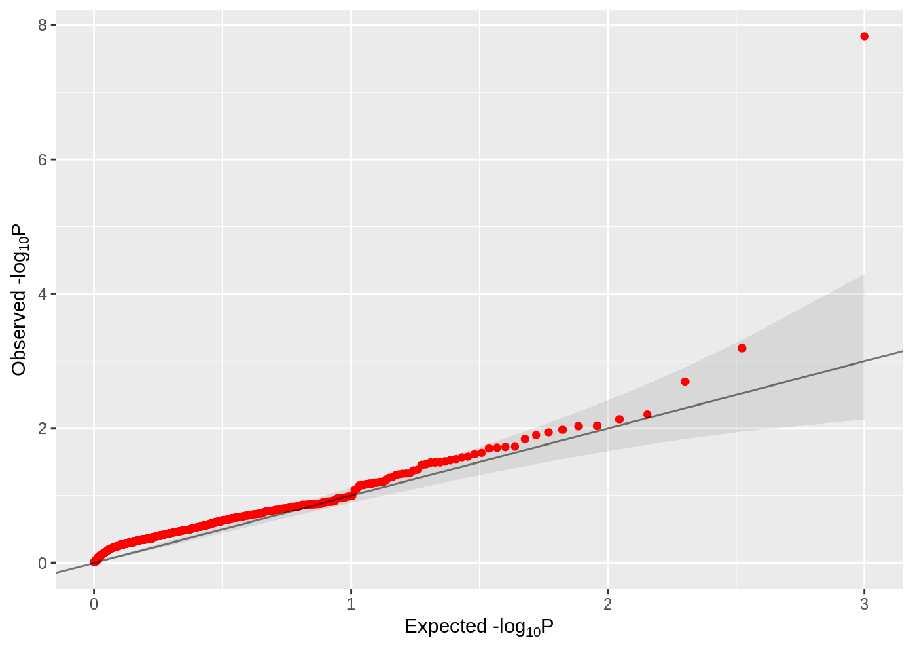
| Version | Author | Date |
|---|---|---|
| b7ce689 | jliucx | 2024-10-28 |
p_value <- as.numeric(as.matrix(result_gene_module[,-1]))
# Step 2: Apply BH correction
p_values_adjusted <- p.adjust(p_value, method = "BH")
# Step 3: Reshape the adjusted p-values back into the original matrix shape (same as result_gene_module)
p_values_matrix <- matrix(p_values_adjusted, nrow = nrow(result_gene_module), ncol = ncol(result_gene_module) - 1)
p_values_raw_matrix <- matrix(p_value, nrow = nrow(result_gene_module), ncol = ncol(result_gene_module) - 1)
# Step 4: Identify significant pairs (adjusted p-values < 0.05)
significant_pairs <- p_values_matrix < 0.05
# Extract the significant pairs (gene names and modules)
significant_genes <- result_gene_module$X1[row(significant_pairs)[significant_pairs]]
significant_modules <- colnames(result_gene_module)[-1][col(significant_pairs)[significant_pairs]]
# Combine significant pairs into a data frame
significant_results <- data.frame(grna = significant_genes, module = significant_modules, p_value = p_values_raw_matrix[significant_pairs], adjusted_p_value = p_values_matrix[significant_pairs])
significant_results_with_target <- significant_results %>%
left_join(grna_target_data_frame, by = c("grna" = "grna_id"))
# Show the updated significant results with the grna_target column
(significant_result_ours<-significant_results_with_target[,c(1,5,2,3,4)]) grna grna_target module
1 SNP-44_1 rs12784232 HALLMARK_TNFA_SIGNALING_VIA_NFKB
2 SNP-62_2 rs4761702 HALLMARK_TNFA_SIGNALING_VIA_NFKB
3 SNP-63_1 rs524137 HALLMARK_TNFA_SIGNALING_VIA_NFKB
4 SNP-76_1 rs73660574 HALLMARK_TNFA_SIGNALING_VIA_NFKB
5 SNP-83_1 rs79755767 HALLMARK_TNFA_SIGNALING_VIA_NFKB
6 SNP-62_2 rs4761702 HALLMARK_HYPOXIA
7 SNP-63_1 rs524137 HALLMARK_HYPOXIA
8 SNP-76_1 rs73660574 HALLMARK_HYPOXIA
9 CD55-9 ENSG00000196352 HALLMARK_HYPOXIA
10 SNP-62_2 rs4761702 HALLMARK_G2M_CHECKPOINT
11 SNP-63_1 rs524137 HALLMARK_G2M_CHECKPOINT
12 SNP-76_1 rs73660574 HALLMARK_G2M_CHECKPOINT
13 SNP-82_2 rs79709502 HALLMARK_G2M_CHECKPOINT
14 SNP-83_1 rs79755767 HALLMARK_G2M_CHECKPOINT
15 SNP-62_2 rs4761702 HALLMARK_ADIPOGENESIS
16 SNP-63_1 rs524137 HALLMARK_ADIPOGENESIS
17 SNP-64_2 rs527890099 HALLMARK_ADIPOGENESIS
18 SNP-70_1 rs6578598 HALLMARK_ADIPOGENESIS
19 SNP-76_1 rs73660574 HALLMARK_ADIPOGENESIS
20 CD52-2 ENSG00000169442 HALLMARK_ADIPOGENESIS
21 CD55-6 ENSG00000196352 HALLMARK_ADIPOGENESIS
22 SNP-62_2 rs4761702 HALLMARK_ESTROGEN_RESPONSE_EARLY
23 SNP-44_1 rs12784232 HALLMARK_ESTROGEN_RESPONSE_LATE
24 SNP-44_2 rs12784232 HALLMARK_ESTROGEN_RESPONSE_LATE
25 SNP-62_2 rs4761702 HALLMARK_ESTROGEN_RESPONSE_LATE
26 SNP-57_1 rs35305150 HALLMARK_MYOGENESIS
27 SNP-62_2 rs4761702 HALLMARK_MYOGENESIS
28 SNP-63_1 rs524137 HALLMARK_MYOGENESIS
29 SNP-44_1 rs12784232 HALLMARK_INTERFERON_GAMMA_RESPONSE
30 SNP-63_1 rs524137 HALLMARK_INTERFERON_GAMMA_RESPONSE
31 SNP-76_1 rs73660574 HALLMARK_INTERFERON_GAMMA_RESPONSE
32 SNP-62_2 rs4761702 HALLMARK_APICAL_JUNCTION
33 SNP-6_1 rs11753645 HALLMARK_COMPLEMENT
34 SNP-62_2 rs4761702 HALLMARK_COMPLEMENT
35 SNP-88_2 rs9943081 HALLMARK_COMPLEMENT
36 CD46-1 ENSG00000117335 HALLMARK_COMPLEMENT
37 SNP-44_1 rs12784232 HALLMARK_MTORC1_SIGNALING
38 SNP-62_2 rs4761702 HALLMARK_MTORC1_SIGNALING
39 SNP-63_1 rs524137 HALLMARK_MTORC1_SIGNALING
40 CD52-2 ENSG00000169442 HALLMARK_MTORC1_SIGNALING
41 SNP-62_2 rs4761702 HALLMARK_E2F_TARGETS
42 SNP-63_1 rs524137 HALLMARK_E2F_TARGETS
43 SNP-77_1 rs75522380 HALLMARK_E2F_TARGETS
44 SNP-6_1 rs11753645 HALLMARK_MYC_TARGETS_V1
45 SNP-44_1 rs12784232 HALLMARK_MYC_TARGETS_V1
46 SNP-62_2 rs4761702 HALLMARK_MYC_TARGETS_V1
47 SNP-63_1 rs524137 HALLMARK_MYC_TARGETS_V1
48 SNP-82_2 rs79709502 HALLMARK_MYC_TARGETS_V1
49 SNP-83_1 rs79755767 HALLMARK_MYC_TARGETS_V1
50 CD52-2 ENSG00000169442 HALLMARK_MYC_TARGETS_V1
51 SNP-57_1 rs35305150 HALLMARK_EPITHELIAL_MESENCHYMAL_TRANSITION
52 SNP-59_2 rs35531439 HALLMARK_EPITHELIAL_MESENCHYMAL_TRANSITION
53 SNP-62_2 rs4761702 HALLMARK_EPITHELIAL_MESENCHYMAL_TRANSITION
54 SNP-63_1 rs524137 HALLMARK_EPITHELIAL_MESENCHYMAL_TRANSITION
55 SNP-83_1 rs79755767 HALLMARK_EPITHELIAL_MESENCHYMAL_TRANSITION
56 SNP-44_1 rs12784232 HALLMARK_INFLAMMATORY_RESPONSE
57 SNP-50_1 rs1876518 HALLMARK_INFLAMMATORY_RESPONSE
58 SNP-62_2 rs4761702 HALLMARK_INFLAMMATORY_RESPONSE
59 SNP-63_1 rs524137 HALLMARK_INFLAMMATORY_RESPONSE
60 SNP-83_1 rs79755767 HALLMARK_INFLAMMATORY_RESPONSE
61 SNP-88_2 rs9943081 HALLMARK_INFLAMMATORY_RESPONSE
62 CD46-1 ENSG00000117335 HALLMARK_INFLAMMATORY_RESPONSE
63 SNP-62_2 rs4761702 HALLMARK_XENOBIOTIC_METABOLISM
64 SNP-63_1 rs524137 HALLMARK_XENOBIOTIC_METABOLISM
65 SNP-64_2 rs527890099 HALLMARK_XENOBIOTIC_METABOLISM
66 SNP-76_1 rs73660574 HALLMARK_XENOBIOTIC_METABOLISM
67 SNP-62_2 rs4761702 HALLMARK_OXIDATIVE_PHOSPHORYLATION
68 SNP-63_1 rs524137 HALLMARK_OXIDATIVE_PHOSPHORYLATION
69 SNP-70_1 rs6578598 HALLMARK_OXIDATIVE_PHOSPHORYLATION
70 CD52-2 ENSG00000169442 HALLMARK_OXIDATIVE_PHOSPHORYLATION
71 PPIA-1 ENSG00000196262 HALLMARK_OXIDATIVE_PHOSPHORYLATION
72 SNP-44_1 rs12784232 HALLMARK_GLYCOLYSIS
73 SNP-50_2 rs1876518 HALLMARK_GLYCOLYSIS
74 SNP-62_2 rs4761702 HALLMARK_GLYCOLYSIS
75 SNP-63_1 rs524137 HALLMARK_GLYCOLYSIS
76 CD52-2 ENSG00000169442 HALLMARK_GLYCOLYSIS
77 NMU-1 ENSG00000109255 HALLMARK_GLYCOLYSIS
78 SNP-44_1 rs12784232 HALLMARK_P53_PATHWAY
79 SNP-62_2 rs4761702 HALLMARK_P53_PATHWAY
80 SNP-63_1 rs524137 HALLMARK_P53_PATHWAY
81 SNP-76_1 rs73660574 HALLMARK_P53_PATHWAY
82 SNP-83_1 rs79755767 HALLMARK_P53_PATHWAY
83 PPIA-2 ENSG00000196262 HALLMARK_P53_PATHWAY
84 RPL22-1 ENSG00000116251 HALLMARK_P53_PATHWAY
85 SNP-44_1 rs12784232 HALLMARK_HEME_METABOLISM
86 SNP-62_2 rs4761702 HALLMARK_HEME_METABOLISM
87 SNP-63_1 rs524137 HALLMARK_HEME_METABOLISM
88 SNP-53_1 rs2429454 HALLMARK_ALLOGRAFT_REJECTION
89 SNP-62_2 rs4761702 HALLMARK_ALLOGRAFT_REJECTION
90 SNP-83_1 rs79755767 HALLMARK_ALLOGRAFT_REJECTION
91 SNP-44_1 rs12784232 HALLMARK_KRAS_SIGNALING_UP
92 SNP-62_2 rs4761702 HALLMARK_KRAS_SIGNALING_UP
93 SNP-63_1 rs524137 HALLMARK_KRAS_SIGNALING_UP
94 CD52-2 ENSG00000169442 HALLMARK_KRAS_SIGNALING_UP
95 HSPA8-1 ENSG00000109971 HALLMARK_KRAS_SIGNALING_UP
96 SNP-60_1 rs4147779 HALLMARK_KRAS_SIGNALING_DN
97 SNP-62_2 rs4761702 HALLMARK_KRAS_SIGNALING_DN
98 SNP-58_2 rs35362007 HALLMARK_MITOTIC_SPINDLE
99 SNP-62_2 rs4761702 HALLMARK_MITOTIC_SPINDLE
100 SNP-63_1 rs524137 HALLMARK_MITOTIC_SPINDLE
101 CD52-2 ENSG00000169442 HALLMARK_MITOTIC_SPINDLE
102 CD55-7 ENSG00000196352 HALLMARK_MITOTIC_SPINDLE
103 SNP-44_1 rs12784232 HALLMARK_IL2_STAT5_SIGNALING
104 SNP-62_2 rs4761702 HALLMARK_IL2_STAT5_SIGNALING
105 SNP-63_1 rs524137 HALLMARK_IL2_STAT5_SIGNALING
106 SNP-75_2 rs7256735 HALLMARK_IL2_STAT5_SIGNALING
107 CD55-1 ENSG00000196352 HALLMARK_IL2_STAT5_SIGNALING
108 CD55-2 ENSG00000196352 HALLMARK_IL2_STAT5_SIGNALING
109 CD55-3 ENSG00000196352 HALLMARK_IL2_STAT5_SIGNALING
110 CD55-5 ENSG00000196352 HALLMARK_IL2_STAT5_SIGNALING
111 CD55-6 ENSG00000196352 HALLMARK_IL2_STAT5_SIGNALING
112 SNP-62_2 rs4761702 HALLMARK_APOPTOSIS
113 SNP-63_1 rs524137 HALLMARK_APOPTOSIS
114 SNP-76_1 rs73660574 HALLMARK_APOPTOSIS
115 SNP-83_1 rs79755767 HALLMARK_APOPTOSIS
116 SNP-62_2 rs4761702 HALLMARK_FATTY_ACID_METABOLISM
117 SNP-63_1 rs524137 HALLMARK_FATTY_ACID_METABOLISM
118 CD52-2 ENSG00000169442 HALLMARK_FATTY_ACID_METABOLISM
119 SNP-62_2 rs4761702 HALLMARK_UV_RESPONSE_UP
120 SNP-63_1 rs524137 HALLMARK_UV_RESPONSE_UP
121 SNP-62_2 rs4761702 HALLMARK_DNA_REPAIR
122 SNP-44_1 rs12784232 HALLMARK_UV_RESPONSE_DN
123 SNP-62_2 rs4761702 HALLMARK_UV_RESPONSE_DN
124 SNP-63_1 rs524137 HALLMARK_UV_RESPONSE_DN
125 SNP-76_1 rs73660574 HALLMARK_UV_RESPONSE_DN
126 CD55-9 ENSG00000196352 HALLMARK_UV_RESPONSE_DN
127 SNP-6_1 rs11753645 HALLMARK_COAGULATION
128 SNP-57_1 rs35305150 HALLMARK_COAGULATION
129 SNP-59_2 rs35531439 HALLMARK_COAGULATION
130 SNP-62_2 rs4761702 HALLMARK_COAGULATION
131 SNP-44_1 rs12784232 HALLMARK_SPERMATOGENESIS
132 SNP-62_2 rs4761702 HALLMARK_SPERMATOGENESIS
133 SNP-63_1 rs524137 HALLMARK_SPERMATOGENESIS
134 SNP-83_1 rs79755767 HALLMARK_SPERMATOGENESIS
135 SNP-6_1 rs11753645 HALLMARK_UNFOLDED_PROTEIN_RESPONSE
136 SNP-44_1 rs12784232 HALLMARK_UNFOLDED_PROTEIN_RESPONSE
137 SNP-62_2 rs4761702 HALLMARK_UNFOLDED_PROTEIN_RESPONSE
138 SNP-63_1 rs524137 HALLMARK_UNFOLDED_PROTEIN_RESPONSE
139 SNP-82_2 rs79709502 HALLMARK_UNFOLDED_PROTEIN_RESPONSE
140 SNP-83_1 rs79755767 HALLMARK_UNFOLDED_PROTEIN_RESPONSE
141 SNP-6_1 rs11753645 HALLMARK_BILE_ACID_METABOLISM
142 SNP-26_2 rs9325434 HALLMARK_BILE_ACID_METABOLISM
143 SNP-62_2 rs4761702 HALLMARK_BILE_ACID_METABOLISM
144 SNP-63_1 rs524137 HALLMARK_BILE_ACID_METABOLISM
145 SNP-64_2 rs527890099 HALLMARK_BILE_ACID_METABOLISM
146 SNP-75_2 rs7256735 HALLMARK_BILE_ACID_METABOLISM
147 SNP-76_1 rs73660574 HALLMARK_BILE_ACID_METABOLISM
148 NTC-9 non-targeting HALLMARK_BILE_ACID_METABOLISM
149 SNP-6_1 rs11753645 HALLMARK_PI3K_AKT_MTOR_SIGNALING
150 SNP-44_1 rs12784232 HALLMARK_PI3K_AKT_MTOR_SIGNALING
151 SNP-52_2 rs2028898 HALLMARK_PI3K_AKT_MTOR_SIGNALING
152 SNP-62_2 rs4761702 HALLMARK_PI3K_AKT_MTOR_SIGNALING
153 SNP-63_1 rs524137 HALLMARK_PI3K_AKT_MTOR_SIGNALING
154 SNP-76_1 rs73660574 HALLMARK_PI3K_AKT_MTOR_SIGNALING
155 SNP-83_1 rs79755767 HALLMARK_PI3K_AKT_MTOR_SIGNALING
156 SNP-44_1 rs12784232 HALLMARK_PEROXISOME
157 SNP-62_2 rs4761702 HALLMARK_PEROXISOME
158 SNP-63_1 rs524137 HALLMARK_PEROXISOME
159 SNP-76_1 rs73660574 HALLMARK_PEROXISOME
160 NTC-9 non-targeting HALLMARK_PEROXISOME
161 SNP-6_1 rs11753645 HALLMARK_ANDROGEN_RESPONSE
162 SNP-50_2 rs1876518 HALLMARK_ANDROGEN_RESPONSE
163 SNP-62_2 rs4761702 HALLMARK_ANDROGEN_RESPONSE
164 SNP-63_1 rs524137 HALLMARK_ANDROGEN_RESPONSE
165 SNP-62_2 rs4761702 HALLMARK_INTERFERON_ALPHA_RESPONSE
166 SNP-6_1 rs11753645 HALLMARK_PROTEIN_SECRETION
167 SNP-62_2 rs4761702 HALLMARK_PROTEIN_SECRETION
168 SNP-72_2 rs6924387 HALLMARK_PROTEIN_SECRETION
169 SNP-83_1 rs79755767 HALLMARK_PROTEIN_SECRETION
170 SNP-44_1 rs12784232 HALLMARK_IL6_JAK_STAT3_SIGNALING
171 CD52-2 ENSG00000169442 HALLMARK_IL6_JAK_STAT3_SIGNALING
172 HSPA8-1 ENSG00000109971 HALLMARK_IL6_JAK_STAT3_SIGNALING
173 SNP-44_2 rs12784232 HALLMARK_CHOLESTEROL_HOMEOSTASIS
174 SNP-62_2 rs4761702 HALLMARK_CHOLESTEROL_HOMEOSTASIS
175 SNP-62_2 rs4761702 HALLMARK_MYC_TARGETS_V2
176 SNP-72_2 rs6924387 HALLMARK_MYC_TARGETS_V2
177 SNP-83_1 rs79755767 HALLMARK_MYC_TARGETS_V2
178 CD52-2 ENSG00000169442 HALLMARK_MYC_TARGETS_V2
179 PPIA-1 ENSG00000196262 HALLMARK_MYC_TARGETS_V2
180 CD55-2 ENSG00000196352 HALLMARK_MYC_TARGETS_V2
181 SNP-44_1 rs12784232 HALLMARK_TGF_BETA_SIGNALING
182 SNP-62_2 rs4761702 HALLMARK_TGF_BETA_SIGNALING
183 SNP-83_1 rs79755767 HALLMARK_TGF_BETA_SIGNALING
184 SNP-44_1 rs12784232 HALLMARK_REACTIVE_OXYGEN_SPECIES_PATHWAY
185 SNP-57_1 rs35305150 HALLMARK_REACTIVE_OXYGEN_SPECIES_PATHWAY
186 SNP-12_1 rs1326270 HALLMARK_PANCREAS_BETA_CELLS
187 SNP-14_2 rs1926231 HALLMARK_PANCREAS_BETA_CELLS
188 SNP-62_2 rs4761702 HALLMARK_PANCREAS_BETA_CELLS
189 SNP-62_2 rs4761702 HALLMARK_HEDGEHOG_SIGNALING
190 SNP-64_2 rs527890099 HALLMARK_HEDGEHOG_SIGNALING
191 SNP-75_2 rs7256735 HALLMARK_HEDGEHOG_SIGNALING
192 SNP-76_1 rs73660574 HALLMARK_HEDGEHOG_SIGNALING
193 SNP-6_1 rs11753645 HALLMARK_ANGIOGENESIS
194 SNP-35_1 rs10445033 HALLMARK_ANGIOGENESIS
195 SNP-62_2 rs4761702 HALLMARK_ANGIOGENESIS
196 PPIA-2 ENSG00000196262 HALLMARK_ANGIOGENESIS
197 CD55-7 ENSG00000196352 HALLMARK_ANGIOGENESIS
198 SNP-62_2 rs4761702 HALLMARK_NOTCH_SIGNALING
p_value adjusted_p_value
1 1.533269e-07 2.847500e-05
2 1.040276e-04 7.783363e-03
3 7.563733e-05 5.834113e-03
4 1.434124e-09 2.130699e-06
5 4.354119e-04 2.602462e-02
6 3.642882e-05 2.967110e-03
7 8.044992e-07 1.032937e-04
8 7.639629e-04 4.074469e-02
9 2.773223e-04 1.769418e-02
10 1.568246e-04 1.123607e-02
11 1.436515e-08 5.538520e-06
12 2.470220e-05 2.140857e-03
13 3.368575e-08 8.758294e-06
14 1.534330e-04 1.111132e-02
15 0.000000e+00 0.000000e+00
16 4.313989e-07 6.145957e-05
17 2.094792e-04 1.396528e-02
18 5.205793e-09 4.921841e-06
19 2.493602e-07 3.817317e-05
20 8.860309e-07 1.123746e-04
21 4.004619e-06 4.004619e-04
22 1.245597e-04 9.187385e-03
23 1.695024e-05 1.493919e-03
24 6.748201e-07 9.114453e-05
25 3.728152e-04 2.280752e-02
26 7.291172e-04 3.908670e-02
27 1.269184e-08 5.538520e-06
28 7.923254e-08 1.681670e-05
29 5.796465e-09 5.023603e-06
30 2.689242e-06 2.769120e-04
31 5.930037e-04 3.370076e-02
32 8.266046e-09 5.372930e-06
33 3.378403e-05 2.788523e-03
34 3.423575e-04 2.119356e-02
35 4.394470e-08 1.088155e-05
36 2.734713e-08 7.900281e-06
37 2.203455e-04 1.459614e-02
38 2.606714e-06 2.710982e-04
39 5.583522e-05 4.432720e-03
40 2.609545e-07 3.933227e-05
41 2.193399e-08 7.128547e-06
42 3.891077e-07 5.620444e-05
43 1.880873e-07 3.155012e-05
44 1.770246e-04 1.224171e-02
45 1.065812e-07 2.173420e-05
46 1.661851e-05 1.477201e-03
47 5.486463e-04 3.205574e-02
48 2.697475e-05 2.299487e-03
49 5.069253e-06 5.020974e-04
50 4.198238e-04 2.523796e-02
51 4.972758e-04 2.921846e-02
52 1.282414e-08 5.538520e-06
53 1.881359e-05 1.644212e-03
54 4.380311e-04 2.603157e-02
55 1.138120e-07 2.276240e-05
56 1.115907e-08 5.538520e-06
57 6.008955e-04 3.396366e-02
58 5.687007e-08 1.285758e-05
59 3.392103e-04 2.112448e-02
60 1.058639e-05 9.657761e-04
61 3.220602e-05 2.679541e-03
62 4.708916e-08 1.138901e-05
63 1.586359e-06 1.870652e-04
64 5.276926e-05 4.221541e-03
65 8.009820e-09 5.372930e-06
66 2.086054e-06 2.259892e-04
67 1.349170e-08 5.538520e-06
68 3.054871e-08 8.360699e-06
69 1.651869e-07 2.961972e-05
70 1.672721e-06 1.870652e-04
71 0.000000e+00 0.000000e+00
72 2.501900e-04 1.616134e-02
73 6.452992e-04 3.495371e-02
74 3.026353e-07 4.432968e-05
75 2.888389e-06 2.945024e-04
76 1.131709e-06 1.418046e-04
77 5.596057e-08 1.285758e-05
78 1.668089e-06 1.870652e-04
79 6.344688e-05 4.961260e-03
80 7.705549e-08 1.669536e-05
81 7.531871e-07 1.004250e-04
82 2.437830e-07 3.817317e-05
83 1.179177e-04 8.759601e-03
84 1.491140e-08 5.538520e-06
85 1.657873e-06 1.870652e-04
86 1.171625e-08 5.538520e-06
87 7.686046e-04 4.078310e-02
88 6.117741e-08 1.353713e-05
89 1.915792e-04 1.293782e-02
90 5.172470e-08 1.222584e-05
91 4.067214e-04 2.459245e-02
92 1.674276e-04 1.175595e-02
93 5.039822e-09 4.921841e-06
94 2.918482e-05 2.467660e-03
95 4.831374e-04 2.854903e-02
96 1.624914e-07 2.961972e-05
97 2.962767e-05 2.484902e-03
98 3.275988e-06 3.307793e-04
99 2.541255e-05 2.184220e-03
100 3.750793e-05 3.023895e-03
101 2.495938e-07 3.817317e-05
102 1.850030e-07 3.155012e-05
103 5.883598e-07 8.158589e-05
104 2.423249e-04 1.575112e-02
105 1.777402e-04 1.224171e-02
106 5.520232e-04 3.207286e-02
107 1.156834e-06 1.432271e-04
108 1.566325e-08 5.617167e-06
109 7.366911e-09 5.372930e-06
110 2.585546e-04 1.659857e-02
111 8.080420e-09 5.372930e-06
112 4.752878e-07 6.679721e-05
113 3.651828e-05 2.967110e-03
114 1.270826e-07 2.403017e-05
115 2.332334e-07 3.731734e-05
116 7.530172e-06 7.093465e-04
117 6.413379e-04 3.493818e-02
118 2.517724e-06 2.644882e-04
119 0.000000e+00 0.000000e+00
120 1.590880e-06 1.870652e-04
121 2.961226e-08 8.323445e-06
122 2.135251e-07 3.524859e-05
123 4.382738e-08 1.088155e-05
124 1.646958e-06 1.870652e-04
125 7.573127e-05 5.834113e-03
126 8.243512e-08 1.714650e-05
127 7.623410e-06 7.093465e-04
128 1.214269e-08 5.538520e-06
129 7.837930e-06 7.213671e-04
130 0.000000e+00 0.000000e+00
131 3.178794e-04 2.003604e-02
132 7.228395e-06 6.960676e-04
133 2.406321e-08 7.365485e-06
134 1.854092e-07 3.155012e-05
135 1.841539e-04 1.260000e-02
136 8.315466e-04 4.389891e-02
137 1.081476e-05 9.780302e-04
138 1.577371e-04 1.123607e-02
139 6.155959e-04 3.442041e-02
140 1.182576e-07 2.320526e-05
141 7.631739e-07 1.004685e-04
142 1.661192e-05 1.477201e-03
143 2.633432e-08 7.825056e-06
144 1.619273e-04 1.145608e-02
145 1.174857e-08 5.538520e-06
146 3.235511e-04 2.027067e-02
147 3.322955e-08 8.758294e-06
148 6.416531e-04 3.493818e-02
149 2.225958e-06 2.362241e-04
150 2.375973e-04 1.554096e-02
151 5.823259e-04 3.327577e-02
152 0.000000e+00 0.000000e+00
153 2.173132e-07 3.531340e-05
154 2.029676e-06 2.221961e-04
155 3.126475e-04 1.982643e-02
156 1.527674e-04 1.111132e-02
157 1.684265e-04 1.175595e-02
158 1.877645e-04 1.276307e-02
159 7.200387e-06 6.960676e-04
160 1.471698e-08 5.538520e-06
161 1.538490e-04 1.111132e-02
162 5.642203e-04 3.241929e-02
163 1.205237e-08 5.538520e-06
164 4.532359e-09 4.921841e-06
165 2.308769e-04 1.519696e-02
166 1.856433e-07 3.155012e-05
167 6.851788e-06 6.722509e-04
168 9.361125e-04 4.916955e-02
169 1.473688e-06 1.803101e-04
170 6.335728e-04 3.486327e-02
171 6.262339e-07 8.569517e-05
172 2.132723e-08 7.128547e-06
173 2.039226e-04 1.368255e-02
174 9.187513e-05 6.974462e-03
175 2.794569e-07 4.151930e-05
176 1.672795e-06 1.870652e-04
177 7.872537e-07 1.023430e-04
178 5.718985e-05 4.505867e-03
179 1.229326e-07 2.367590e-05
180 6.055971e-04 3.404438e-02
181 7.639117e-06 7.093465e-04
182 8.195392e-05 6.267064e-03
183 3.851345e-04 2.342339e-02
184 7.503054e-06 7.093465e-04
185 9.988993e-09 5.538520e-06
186 2.407947e-08 7.365485e-06
187 2.198239e-06 2.356875e-04
188 5.632599e-04 3.241929e-02
189 0.000000e+00 0.000000e+00
190 3.238473e-09 4.210015e-06
191 1.492520e-06 1.804908e-04
192 6.222551e-04 3.442262e-02
193 1.645106e-08 5.703033e-06
194 1.017185e-04 7.665744e-03
195 3.652969e-04 2.247981e-02
196 6.548674e-04 3.528819e-02
197 1.808744e-06 2.001163e-04
198 6.194299e-04 3.442262e-02sum(significant_result_ours$grna_target=="non-targeting") [1] 2unique(significant_result_ours$grna) [1] "SNP-44_1" "SNP-62_2" "SNP-63_1" "SNP-76_1" "SNP-83_1" "CD55-9"
[7] "SNP-82_2" "SNP-64_2" "SNP-70_1" "CD52-2" "CD55-6" "SNP-44_2"
[13] "SNP-57_1" "SNP-6_1" "SNP-88_2" "CD46-1" "SNP-77_1" "SNP-59_2"
[19] "SNP-50_1" "PPIA-1" "SNP-50_2" "NMU-1" "PPIA-2" "RPL22-1"
[25] "SNP-53_1" "HSPA8-1" "SNP-60_1" "SNP-58_2" "CD55-7" "SNP-75_2"
[31] "CD55-1" "CD55-2" "CD55-3" "CD55-5" "SNP-26_2" "NTC-9"
[37] "SNP-52_2" "SNP-72_2" "SNP-12_1" "SNP-14_2" "SNP-35_1"unique(significant_result_ours$grna_target) [1] "rs12784232" "rs4761702" "rs524137" "rs73660574"
[5] "rs79755767" "ENSG00000196352" "rs79709502" "rs527890099"
[9] "rs6578598" "ENSG00000169442" "rs35305150" "rs11753645"
[13] "rs9943081" "ENSG00000117335" "rs75522380" "rs35531439"
[17] "rs1876518" "ENSG00000196262" "ENSG00000109255" "ENSG00000116251"
[21] "rs2429454" "ENSG00000109971" "rs4147779" "rs35362007"
[25] "rs7256735" "rs9325434" "non-targeting" "rs2028898"
[29] "rs6924387" "rs1326270" "rs1926231" "rs10445033" Use sceptre function to fit skew t
result_gene_module <- read_csv("output/try_sceptre_skew_fit_normalized_threshold.csv")Warning: Missing column names filled in: 'X1' [1]
── Column specification ────────────────────────────────────────────────────────
cols(
.default = col_double(),
X1 = col_character()
)
ℹ Use `spec()` for the full column specifications.result_gene_module[1:198,]# A tibble: 198 × 51
X1 HALLMARK_TNFA_SIGNALING_VIA…¹ HALLMARK_HYPOXIA HALLMARK_G2M_CHECKPO…²
<chr> <dbl> <dbl> <dbl>
1 SNP-1_1 0.794 0.221 0.391
2 SNP-1_2 0.542 0.0867 0.235
3 SNP-2_1 0.331 0.497 0.550
4 SNP-2_2 0.329 0.330 0.461
5 SNP-3_1 0.594 0.0842 0.320
6 SNP-3_2 0.721 0.401 0.337
7 SNP-4_1 0.653 0.236 0.221
8 SNP-4_2 0.508 0.264 0.0836
9 SNP-5_1 0.611 0.602 0.511
10 SNP-5_2 0.102 0.0734 0.321
# ℹ 188 more rows
# ℹ abbreviated names: ¹HALLMARK_TNFA_SIGNALING_VIA_NFKB,
# ²HALLMARK_G2M_CHECKPOINT
# ℹ 47 more variables: HALLMARK_ADIPOGENESIS <dbl>,
# HALLMARK_ESTROGEN_RESPONSE_EARLY <dbl>,
# HALLMARK_ESTROGEN_RESPONSE_LATE <dbl>, HALLMARK_MYOGENESIS <dbl>,
# HALLMARK_INTERFERON_GAMMA_RESPONSE <dbl>, HALLMARK_APICAL_JUNCTION <dbl>, …gg_qqplot(as.vector(as.matrix(result_gene_module[189:198,-1])))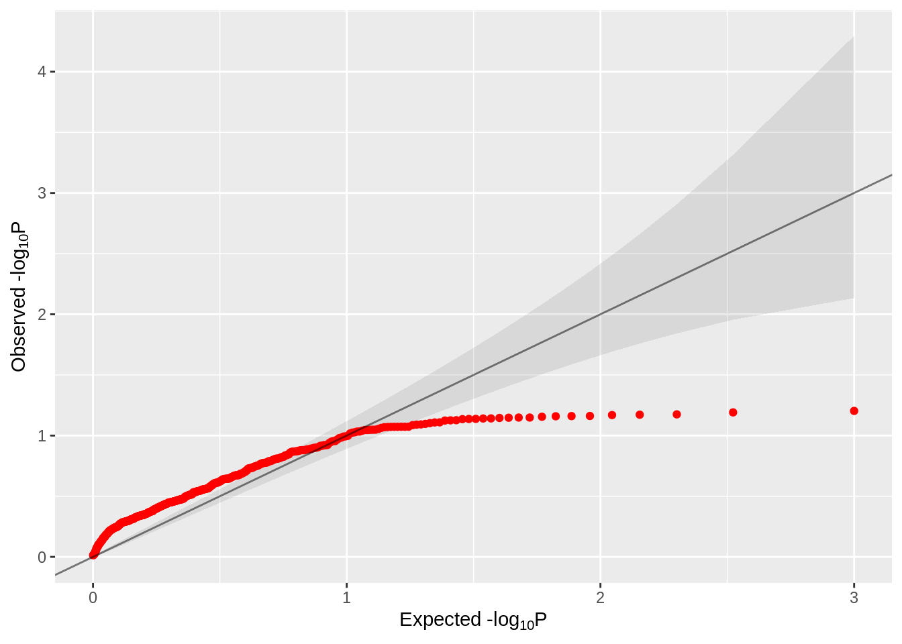
| Version | Author | Date |
|---|---|---|
| b7ce689 | jliucx | 2024-10-28 |
p_value <- as.numeric(as.matrix(result_gene_module[1:198,-1]))
# Step 2: Apply BH correction
p_values_adjusted <- p.adjust(p_value, method = "BH")
# Step 3: Reshape the adjusted p-values back into the original matrix shape (same as result_gene_module)
p_values_matrix <- matrix(p_values_adjusted, nrow = 198, ncol = ncol(result_gene_module) - 1)
# Step 4: Identify significant pairs (adjusted p-values < 0.05)
significant_pairs <- p_values_matrix < 0.05
# Extract the significant pairs (gene names and modules)
significant_genes <- result_gene_module$X1[row(significant_pairs)[significant_pairs]]
significant_modules <- colnames(result_gene_module)[-1][col(significant_pairs)[significant_pairs]]
# Combine significant pairs into a data frame
significant_results <- data.frame(grna = significant_genes, module = significant_modules, adjusted_p_value = p_values_matrix[significant_pairs])
# Show the significant results
significant_results[1] grna module adjusted_p_value
<0 rows> (or 0-length row.names)significant_results_with_target <- significant_results %>%
left_join(grna_target_data_frame, by = c("grna" = "grna_id"))
# Show the updated significant results with the grna_target column
(significant_result<-significant_results_with_target[,c(1,4,2,3)])[1] grna grna_target module adjusted_p_value
<0 rows> (or 0-length row.names)Comparing 3 methods
Sceptre on whole dataset
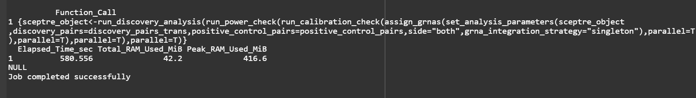
| Version | Author | Date |
|---|---|---|
| b7ce689 | jliucx | 2024-10-28 |
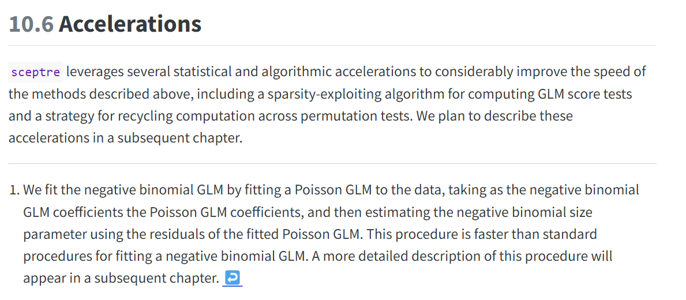
| Version | Author | Date |
|---|---|---|
| b7ce689 | jliucx | 2024-10-28 |
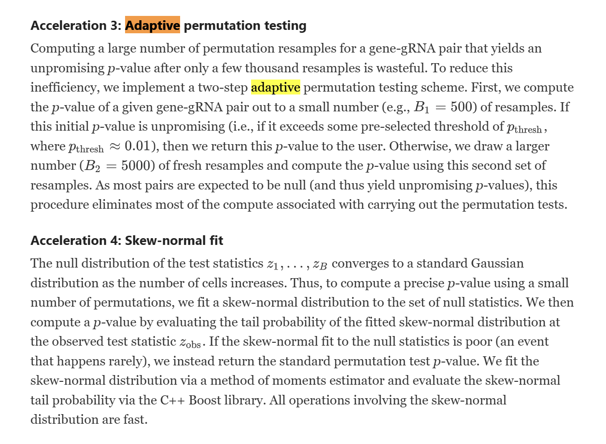
| Version | Author | Date |
|---|---|---|
| b7ce689 | jliucx | 2024-10-28 |
Quick skewed t fit from sceptre (poor fit)
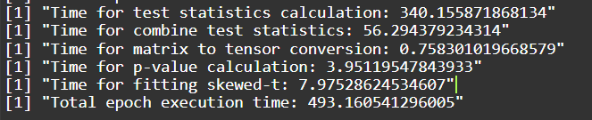
| Version | Author | Date |
|---|---|---|
| b7ce689 | jliucx | 2024-10-28 |
Our skewed t fit (good fit)
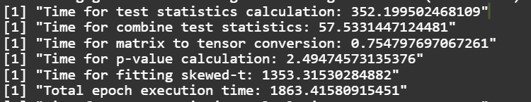
| Version | Author | Date |
|---|---|---|
| b7ce689 | jliucx | 2024-10-28 |
grna_counts_minp <- sceptre_minp %>%
count(grna_id) %>%
arrange(desc(n))
# Display the result
grna_counts_minp# A tibble: 84 × 2
grna_id n
<chr> <int>
1 SNP-62_2 49
2 SNP-83_1 47
3 SNP-63_1 43
4 SNP-44_1 35
5 SNP-76_1 27
6 SNP-72_2 25
7 SNP-82_2 23
8 CD52-2 22
9 SNP-75_2 19
10 SNP-26_1 13
# ℹ 74 more rowsgrna_counts_ACAT <- sceptre_ACAT %>%
count(grna_id) %>%
arrange(desc(n))
# Display the result
grna_counts_ACAT# A tibble: 58 × 2
grna_id n
<chr> <int>
1 SNP-62_2 50
2 SNP-83_1 47
3 SNP-63_1 42
4 SNP-44_1 32
5 SNP-76_1 25
6 CD52-2 22
7 SNP-72_2 20
8 SNP-82_2 16
9 SNP-50_2 11
10 SNP-75_2 11
# ℹ 48 more rowsgrna_counts <- significant_result_ours %>%
count(grna) %>%
arrange(desc(n))
# Display the result
grna_counts grna n
1 SNP-62_2 45
2 SNP-63_1 29
3 SNP-44_1 19
4 SNP-83_1 14
5 SNP-76_1 13
6 CD52-2 10
7 SNP-6_1 9
8 SNP-57_1 4
9 SNP-64_2 4
10 SNP-75_2 3
11 SNP-82_2 3
12 CD46-1 2
13 CD55-2 2
14 CD55-6 2
15 CD55-7 2
16 CD55-9 2
17 HSPA8-1 2
18 NTC-9 2
19 PPIA-1 2
20 PPIA-2 2
21 SNP-44_2 2
22 SNP-50_2 2
23 SNP-59_2 2
24 SNP-70_1 2
25 SNP-72_2 2
26 SNP-88_2 2
27 CD55-1 1
28 CD55-3 1
29 CD55-5 1
30 NMU-1 1
31 RPL22-1 1
32 SNP-12_1 1
33 SNP-14_2 1
34 SNP-26_2 1
35 SNP-35_1 1
36 SNP-50_1 1
37 SNP-52_2 1
38 SNP-53_1 1
39 SNP-58_2 1
40 SNP-60_1 1
41 SNP-77_1 1library(eulerr)
# Define the sets and calculate overlaps
set_minp <- unique(paste(sceptre_minp %>% pull(1), sceptre_minp %>% pull(3), sep = "_"))
set_acat <- unique(paste(sceptre_ACAT %>% pull(1), sceptre_ACAT %>% pull(3), sep = "_"))
set_ours <- unique(paste(significant_result_ours %>% pull(1), significant_result_ours %>% pull(3), sep = "_"))
# Calculate intersections manually
intersect_all <- intersect(intersect(set_minp, set_acat), set_ours)
intersect_minp_acat<-intersect(set_minp, set_acat)
intersect_minp_ours<-intersect(set_minp, set_ours)
intersect_acat_ours<-intersect(set_acat, set_ours)
only_minp <- length(set_minp) - length(intersect(set_minp, set_acat)) - length(intersect(set_minp, set_ours)) + length(intersect_all)
only_acat <- length(set_acat) - length(intersect(set_acat, set_minp)) - length(intersect(set_acat, set_ours)) + length(intersect_all)
only_ours <- length(set_ours) - length(intersect(set_ours, set_minp)) - length(intersect(set_ours, set_acat)) + length(intersect_all)
minp_acat <- length(intersect_minp_acat) - length(intersect_all)
minp_ours <- length(intersect_minp_ours) - length(intersect_all)
acat_ours <- length(intersect_acat_ours) - length(intersect_all)
all_three <- length(intersect_all)
# Prepare data for eulerr
venn_data <- c(
MinP = only_minp,
ACAT = only_acat,
Ours = only_ours,
"MinP&ACAT" = minp_acat,
"MinP&Ours" = minp_ours,
"ACAT&Ours" = acat_ours,
"MinP&ACAT&Ours" = all_three
)
# Plot the Venn diagram with counts
plot(euler(venn_data),
fills = c("red", "yellow", "green"),
edges = "black",
quantities = TRUE) # Show quantities in the regions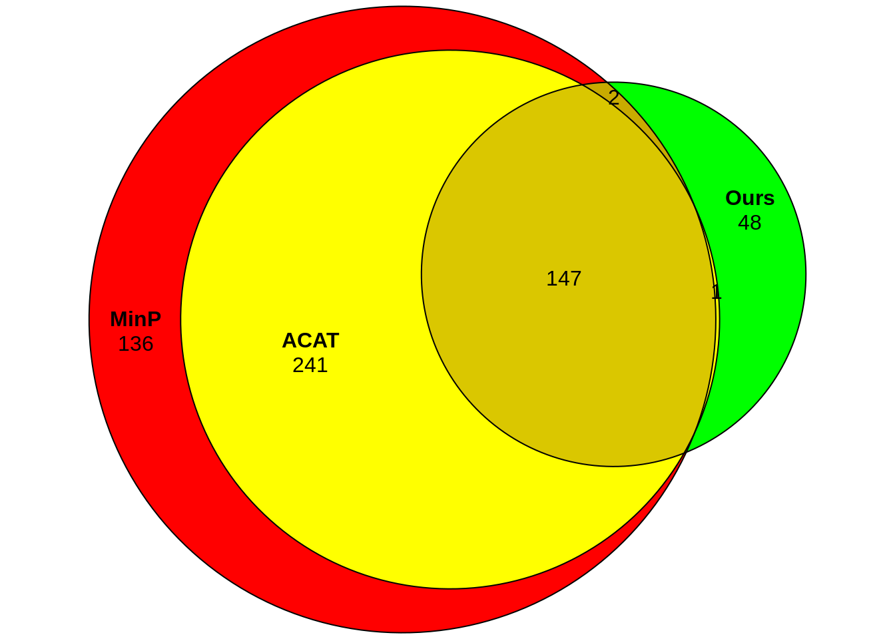
| Version | Author | Date |
|---|---|---|
| b7ce689 | jliucx | 2024-10-28 |
Only consider discovery sets (without considering control sets)
sceptre_result <- results_run_discovery_analysis
sceptre_result_filter1 <- subset(sceptre_result, pass_qc == TRUE)
sceptre_result_filter <- subset(sceptre_result_filter1, !grepl("^CD52", grna_id))
sceptre_result <- sceptre_result_filter[,c(1,2,3,7)]
sceptre_result$adjusted_p_value <- p.adjust(sceptre_result$p_value, method = "BH")
# Filter for significant results (adjusted p-value < 0.05)
significant_results_sceptre <- subset(sceptre_result, adjusted_p_value < 0.05)
module_results <- list()
# Iterate over each response_id from results_run_discovery_analysis
for (i in seq_len(nrow(significant_results_sceptre))) {
response_id <- significant_results_sceptre$response_id[i]
grna_id <- significant_results_sceptre$grna_id[i]
grna_target <- significant_results_sceptre$grna_target[i]
pval<-significant_results_sceptre$p_value[i]
# Find the modules that contain the response_id
containing_modules <- names(gene_modules)[sapply(gene_modules, function(module) response_id %in% module)]
# Store the result for this response_id and grna_id
module_results[[i]] <- data.frame(response_id = response_id, grna_id = grna_id,grna_target=grna_target, module = containing_modules, pval=pval)
}
# Combine all results into a single data frame
module_results_df_2 <- do.call(rbind, module_results)
module_results <- module_results_df_2[,-1]
sceptre_minp <- module_results %>%
group_by(grna_id, module) %>%
slice_min(order_by = pval, n = 1) %>%
ungroup()
# Display the result
sceptre_minp# A tibble: 496 × 4
grna_id grna_target module pval
<chr> <chr> <chr> <dbl>
1 SNP-10_1 rs34286592 HALLMARK_ADIPOGENESIS 0.000109
2 SNP-10_1 rs34286592 HALLMARK_FATTY_ACID_METABOLISM 0.000109
3 SNP-10_2 rs34286592 HALLMARK_E2F_TARGETS 0.000110
4 SNP-12_1 rs1326270 HALLMARK_ALLOGRAFT_REJECTION 0.0000104
5 SNP-12_1 rs1326270 HALLMARK_ANDROGEN_RESPONSE 0.0000104
6 SNP-12_1 rs1326270 HALLMARK_E2F_TARGETS 0.0000750
7 SNP-12_1 rs1326270 HALLMARK_EPITHELIAL_MESENCHYMAL_TRANSITION 0.000111
8 SNP-12_1 rs1326270 HALLMARK_INTERFERON_ALPHA_RESPONSE 0.0000104
9 SNP-12_1 rs1326270 HALLMARK_INTERFERON_GAMMA_RESPONSE 0.00000491
10 SNP-12_1 rs1326270 HALLMARK_MITOTIC_SPINDLE 0.000111
# ℹ 486 more rowsmodule_results <- list()
# Iterate over each response_id from results_run_discovery_analysis
for (i in seq_len(nrow(sceptre_result))) {
response_id <- sceptre_result$response_id[i]
grna_id <- sceptre_result$grna_id[i]
grna_target <- sceptre_result$grna_target[i]
pval<-sceptre_result$p_value[i]
# Find the modules that contain the response_id
containing_modules <- names(gene_modules)[sapply(gene_modules, function(module) response_id %in% module)]
# Store the result for this response_id and grna_id
module_results[[i]] <- data.frame(response_id = response_id, grna_id = grna_id,grna_target=grna_target, module = containing_modules, pval=pval)
}
# Combine all results into a single data frame
module_results_df_2 <- do.call(rbind, module_results)
module_results <- module_results_df_2[,-1]
module_results$pval[module_results$pval == 1] <- 0.999
module_results_unique <- module_results %>%
group_by(grna_id, grna_target, module) %>%
summarize(acat_pval = ACAT(pval), .groups = "drop")
module_results_unique <- module_results_unique %>%
mutate(adjusted_pval = p.adjust(acat_pval, method = "BH"))
# Filter for significant rows (adjusted p-value < 0.05)
sceptre_ACAT <- module_results_unique %>%
filter(adjusted_pval < 0.05)
# Display the significant results
sceptre_ACAT# A tibble: 370 × 5
grna_id grna_target module acat_pval adjusted_pval
<chr> <chr> <chr> <dbl> <dbl>
1 SNP-12_1 rs1326270 HALLMARK_ALLOGRAFT_REJECTION 4.93e- 4 1.48e- 2
2 SNP-12_1 rs1326270 HALLMARK_ANDROGEN_RESPONSE 5.89e- 4 1.71e- 2
3 SNP-12_1 rs1326270 HALLMARK_ANGIOGENESIS 1.05e- 3 2.84e- 2
4 SNP-12_1 rs1326270 HALLMARK_INTERFERON_ALPHA_RESPO… 4.71e- 4 1.43e- 2
5 SNP-12_1 rs1326270 HALLMARK_INTERFERON_GAMMA_RESPO… 2.27e- 4 7.57e- 3
6 SNP-12_1 rs1326270 HALLMARK_P53_PATHWAY 4.50e-14 4.50e-12
7 SNP-12_1 rs1326270 HALLMARK_PANCREAS_BETA_CELLS 8.09e- 4 2.29e- 2
8 SNP-12_1 rs1326270 HALLMARK_TNFA_SIGNALING_VIA_NFKB 2.88e-14 2.91e-12
9 SNP-15_2 rs1998843 HALLMARK_HEDGEHOG_SIGNALING 1.17e- 3 3.05e- 2
10 SNP-16_2 rs4915152 HALLMARK_ESTROGEN_RESPONSE_LATE 1.79e- 4 6.21e- 3
# ℹ 360 more rowsresult_gene_module <- read_csv("output/t_test_on_whole_reduced_dataset_normalized_threshold.csv")Warning: Missing column names filled in: 'X1' [1]
── Column specification ────────────────────────────────────────────────────────
cols(
.default = col_double(),
X1 = col_character()
)
ℹ Use `spec()` for the full column specifications.result_gene_module_snp <- result_gene_module[1:178,]
p_value <- as.numeric(as.matrix(result_gene_module_snp[,-1]))
# Step 2: Apply BH correction
p_values_adjusted <- p.adjust(p_value, method = "BH")
# Step 3: Reshape the adjusted p-values back into the original matrix shape (same as result_gene_module)
p_values_matrix <- matrix(p_values_adjusted, nrow = nrow(result_gene_module_snp), ncol = ncol(result_gene_module_snp) - 1)
p_values_raw_matrix <- matrix(p_value, nrow = nrow(result_gene_module_snp), ncol = ncol(result_gene_module_snp) - 1)
# Step 4: Identify significant pairs (adjusted p-values < 0.05)
significant_pairs <- p_values_matrix < 0.05
# Extract the significant pairs (gene names and modules)
significant_genes <- result_gene_module_snp$X1[row(significant_pairs)[significant_pairs]]
significant_modules <- colnames(result_gene_module_snp)[-1][col(significant_pairs)[significant_pairs]]
# Combine significant pairs into a data frame
significant_results <- data.frame(grna = significant_genes, module = significant_modules, p_value = p_values_raw_matrix[significant_pairs], adjusted_p_value = p_values_matrix[significant_pairs])
significant_results_with_target <- significant_results %>%
left_join(grna_target_data_frame, by = c("grna" = "grna_id"))
# Show the updated significant results with the grna_target column
(significant_result_ours<-significant_results_with_target[,c(1,5,2,3,4)]) grna grna_target module
1 SNP-44_1 rs12784232 HALLMARK_TNFA_SIGNALING_VIA_NFKB
2 SNP-62_2 rs4761702 HALLMARK_TNFA_SIGNALING_VIA_NFKB
3 SNP-63_1 rs524137 HALLMARK_TNFA_SIGNALING_VIA_NFKB
4 SNP-76_1 rs73660574 HALLMARK_TNFA_SIGNALING_VIA_NFKB
5 SNP-83_1 rs79755767 HALLMARK_TNFA_SIGNALING_VIA_NFKB
6 SNP-62_2 rs4761702 HALLMARK_HYPOXIA
7 SNP-63_1 rs524137 HALLMARK_HYPOXIA
8 SNP-76_1 rs73660574 HALLMARK_HYPOXIA
9 SNP-62_2 rs4761702 HALLMARK_G2M_CHECKPOINT
10 SNP-63_1 rs524137 HALLMARK_G2M_CHECKPOINT
11 SNP-76_1 rs73660574 HALLMARK_G2M_CHECKPOINT
12 SNP-82_2 rs79709502 HALLMARK_G2M_CHECKPOINT
13 SNP-83_1 rs79755767 HALLMARK_G2M_CHECKPOINT
14 SNP-62_2 rs4761702 HALLMARK_ADIPOGENESIS
15 SNP-63_1 rs524137 HALLMARK_ADIPOGENESIS
16 SNP-64_2 rs527890099 HALLMARK_ADIPOGENESIS
17 SNP-70_1 rs6578598 HALLMARK_ADIPOGENESIS
18 SNP-76_1 rs73660574 HALLMARK_ADIPOGENESIS
19 SNP-62_2 rs4761702 HALLMARK_ESTROGEN_RESPONSE_EARLY
20 SNP-44_1 rs12784232 HALLMARK_ESTROGEN_RESPONSE_LATE
21 SNP-44_2 rs12784232 HALLMARK_ESTROGEN_RESPONSE_LATE
22 SNP-62_2 rs4761702 HALLMARK_ESTROGEN_RESPONSE_LATE
23 SNP-57_1 rs35305150 HALLMARK_MYOGENESIS
24 SNP-62_2 rs4761702 HALLMARK_MYOGENESIS
25 SNP-63_1 rs524137 HALLMARK_MYOGENESIS
26 SNP-44_1 rs12784232 HALLMARK_INTERFERON_GAMMA_RESPONSE
27 SNP-63_1 rs524137 HALLMARK_INTERFERON_GAMMA_RESPONSE
28 SNP-76_1 rs73660574 HALLMARK_INTERFERON_GAMMA_RESPONSE
29 SNP-62_2 rs4761702 HALLMARK_APICAL_JUNCTION
30 SNP-6_1 rs11753645 HALLMARK_COMPLEMENT
31 SNP-62_2 rs4761702 HALLMARK_COMPLEMENT
32 SNP-88_2 rs9943081 HALLMARK_COMPLEMENT
33 CD46-1 ENSG00000117335 HALLMARK_COMPLEMENT
34 SNP-44_1 rs12784232 HALLMARK_MTORC1_SIGNALING
35 SNP-62_2 rs4761702 HALLMARK_MTORC1_SIGNALING
36 SNP-63_1 rs524137 HALLMARK_MTORC1_SIGNALING
37 SNP-62_2 rs4761702 HALLMARK_E2F_TARGETS
38 SNP-63_1 rs524137 HALLMARK_E2F_TARGETS
39 SNP-77_1 rs75522380 HALLMARK_E2F_TARGETS
40 SNP-6_1 rs11753645 HALLMARK_MYC_TARGETS_V1
41 SNP-44_1 rs12784232 HALLMARK_MYC_TARGETS_V1
42 SNP-62_2 rs4761702 HALLMARK_MYC_TARGETS_V1
43 SNP-63_1 rs524137 HALLMARK_MYC_TARGETS_V1
44 SNP-82_2 rs79709502 HALLMARK_MYC_TARGETS_V1
45 SNP-83_1 rs79755767 HALLMARK_MYC_TARGETS_V1
46 SNP-57_1 rs35305150 HALLMARK_EPITHELIAL_MESENCHYMAL_TRANSITION
47 SNP-59_2 rs35531439 HALLMARK_EPITHELIAL_MESENCHYMAL_TRANSITION
48 SNP-62_2 rs4761702 HALLMARK_EPITHELIAL_MESENCHYMAL_TRANSITION
49 SNP-63_1 rs524137 HALLMARK_EPITHELIAL_MESENCHYMAL_TRANSITION
50 SNP-83_1 rs79755767 HALLMARK_EPITHELIAL_MESENCHYMAL_TRANSITION
51 SNP-44_1 rs12784232 HALLMARK_INFLAMMATORY_RESPONSE
52 SNP-50_1 rs1876518 HALLMARK_INFLAMMATORY_RESPONSE
53 SNP-62_2 rs4761702 HALLMARK_INFLAMMATORY_RESPONSE
54 SNP-63_1 rs524137 HALLMARK_INFLAMMATORY_RESPONSE
55 SNP-83_1 rs79755767 HALLMARK_INFLAMMATORY_RESPONSE
56 SNP-88_2 rs9943081 HALLMARK_INFLAMMATORY_RESPONSE
57 CD46-1 ENSG00000117335 HALLMARK_INFLAMMATORY_RESPONSE
58 SNP-62_2 rs4761702 HALLMARK_XENOBIOTIC_METABOLISM
59 SNP-63_1 rs524137 HALLMARK_XENOBIOTIC_METABOLISM
60 SNP-64_2 rs527890099 HALLMARK_XENOBIOTIC_METABOLISM
61 SNP-76_1 rs73660574 HALLMARK_XENOBIOTIC_METABOLISM
62 SNP-62_2 rs4761702 HALLMARK_OXIDATIVE_PHOSPHORYLATION
63 SNP-63_1 rs524137 HALLMARK_OXIDATIVE_PHOSPHORYLATION
64 SNP-70_1 rs6578598 HALLMARK_OXIDATIVE_PHOSPHORYLATION
65 SNP-44_1 rs12784232 HALLMARK_GLYCOLYSIS
66 SNP-50_2 rs1876518 HALLMARK_GLYCOLYSIS
67 SNP-62_2 rs4761702 HALLMARK_GLYCOLYSIS
68 SNP-63_1 rs524137 HALLMARK_GLYCOLYSIS
69 SNP-44_1 rs12784232 HALLMARK_P53_PATHWAY
70 SNP-62_2 rs4761702 HALLMARK_P53_PATHWAY
71 SNP-63_1 rs524137 HALLMARK_P53_PATHWAY
72 SNP-76_1 rs73660574 HALLMARK_P53_PATHWAY
73 SNP-83_1 rs79755767 HALLMARK_P53_PATHWAY
74 SNP-44_1 rs12784232 HALLMARK_HEME_METABOLISM
75 SNP-62_2 rs4761702 HALLMARK_HEME_METABOLISM
76 SNP-63_1 rs524137 HALLMARK_HEME_METABOLISM
77 SNP-53_1 rs2429454 HALLMARK_ALLOGRAFT_REJECTION
78 SNP-62_2 rs4761702 HALLMARK_ALLOGRAFT_REJECTION
79 SNP-83_1 rs79755767 HALLMARK_ALLOGRAFT_REJECTION
80 SNP-44_1 rs12784232 HALLMARK_KRAS_SIGNALING_UP
81 SNP-62_2 rs4761702 HALLMARK_KRAS_SIGNALING_UP
82 SNP-63_1 rs524137 HALLMARK_KRAS_SIGNALING_UP
83 SNP-60_1 rs4147779 HALLMARK_KRAS_SIGNALING_DN
84 SNP-62_2 rs4761702 HALLMARK_KRAS_SIGNALING_DN
85 SNP-58_2 rs35362007 HALLMARK_MITOTIC_SPINDLE
86 SNP-62_2 rs4761702 HALLMARK_MITOTIC_SPINDLE
87 SNP-63_1 rs524137 HALLMARK_MITOTIC_SPINDLE
88 SNP-44_1 rs12784232 HALLMARK_IL2_STAT5_SIGNALING
89 SNP-62_2 rs4761702 HALLMARK_IL2_STAT5_SIGNALING
90 SNP-63_1 rs524137 HALLMARK_IL2_STAT5_SIGNALING
91 SNP-75_2 rs7256735 HALLMARK_IL2_STAT5_SIGNALING
92 SNP-62_2 rs4761702 HALLMARK_APOPTOSIS
93 SNP-63_1 rs524137 HALLMARK_APOPTOSIS
94 SNP-76_1 rs73660574 HALLMARK_APOPTOSIS
95 SNP-83_1 rs79755767 HALLMARK_APOPTOSIS
96 SNP-62_2 rs4761702 HALLMARK_FATTY_ACID_METABOLISM
97 SNP-63_1 rs524137 HALLMARK_FATTY_ACID_METABOLISM
98 SNP-62_2 rs4761702 HALLMARK_UV_RESPONSE_UP
99 SNP-63_1 rs524137 HALLMARK_UV_RESPONSE_UP
100 SNP-62_2 rs4761702 HALLMARK_DNA_REPAIR
101 SNP-44_1 rs12784232 HALLMARK_UV_RESPONSE_DN
102 SNP-62_2 rs4761702 HALLMARK_UV_RESPONSE_DN
103 SNP-63_1 rs524137 HALLMARK_UV_RESPONSE_DN
104 SNP-76_1 rs73660574 HALLMARK_UV_RESPONSE_DN
105 SNP-6_1 rs11753645 HALLMARK_COAGULATION
106 SNP-57_1 rs35305150 HALLMARK_COAGULATION
107 SNP-59_2 rs35531439 HALLMARK_COAGULATION
108 SNP-62_2 rs4761702 HALLMARK_COAGULATION
109 SNP-44_1 rs12784232 HALLMARK_SPERMATOGENESIS
110 SNP-62_2 rs4761702 HALLMARK_SPERMATOGENESIS
111 SNP-63_1 rs524137 HALLMARK_SPERMATOGENESIS
112 SNP-83_1 rs79755767 HALLMARK_SPERMATOGENESIS
113 SNP-6_1 rs11753645 HALLMARK_UNFOLDED_PROTEIN_RESPONSE
114 SNP-44_1 rs12784232 HALLMARK_UNFOLDED_PROTEIN_RESPONSE
115 SNP-62_2 rs4761702 HALLMARK_UNFOLDED_PROTEIN_RESPONSE
116 SNP-63_1 rs524137 HALLMARK_UNFOLDED_PROTEIN_RESPONSE
117 SNP-82_2 rs79709502 HALLMARK_UNFOLDED_PROTEIN_RESPONSE
118 SNP-83_1 rs79755767 HALLMARK_UNFOLDED_PROTEIN_RESPONSE
119 SNP-6_1 rs11753645 HALLMARK_BILE_ACID_METABOLISM
120 SNP-26_2 rs9325434 HALLMARK_BILE_ACID_METABOLISM
121 SNP-62_2 rs4761702 HALLMARK_BILE_ACID_METABOLISM
122 SNP-63_1 rs524137 HALLMARK_BILE_ACID_METABOLISM
123 SNP-64_2 rs527890099 HALLMARK_BILE_ACID_METABOLISM
124 SNP-75_2 rs7256735 HALLMARK_BILE_ACID_METABOLISM
125 SNP-76_1 rs73660574 HALLMARK_BILE_ACID_METABOLISM
126 SNP-6_1 rs11753645 HALLMARK_PI3K_AKT_MTOR_SIGNALING
127 SNP-44_1 rs12784232 HALLMARK_PI3K_AKT_MTOR_SIGNALING
128 SNP-52_2 rs2028898 HALLMARK_PI3K_AKT_MTOR_SIGNALING
129 SNP-62_2 rs4761702 HALLMARK_PI3K_AKT_MTOR_SIGNALING
130 SNP-63_1 rs524137 HALLMARK_PI3K_AKT_MTOR_SIGNALING
131 SNP-76_1 rs73660574 HALLMARK_PI3K_AKT_MTOR_SIGNALING
132 SNP-83_1 rs79755767 HALLMARK_PI3K_AKT_MTOR_SIGNALING
133 SNP-44_1 rs12784232 HALLMARK_PEROXISOME
134 SNP-62_2 rs4761702 HALLMARK_PEROXISOME
135 SNP-63_1 rs524137 HALLMARK_PEROXISOME
136 SNP-76_1 rs73660574 HALLMARK_PEROXISOME
137 SNP-6_1 rs11753645 HALLMARK_ANDROGEN_RESPONSE
138 SNP-50_2 rs1876518 HALLMARK_ANDROGEN_RESPONSE
139 SNP-62_2 rs4761702 HALLMARK_ANDROGEN_RESPONSE
140 SNP-63_1 rs524137 HALLMARK_ANDROGEN_RESPONSE
141 SNP-62_2 rs4761702 HALLMARK_INTERFERON_ALPHA_RESPONSE
142 SNP-6_1 rs11753645 HALLMARK_PROTEIN_SECRETION
143 SNP-62_2 rs4761702 HALLMARK_PROTEIN_SECRETION
144 SNP-72_2 rs6924387 HALLMARK_PROTEIN_SECRETION
145 SNP-83_1 rs79755767 HALLMARK_PROTEIN_SECRETION
146 SNP-44_1 rs12784232 HALLMARK_IL6_JAK_STAT3_SIGNALING
147 SNP-44_2 rs12784232 HALLMARK_CHOLESTEROL_HOMEOSTASIS
148 SNP-62_2 rs4761702 HALLMARK_CHOLESTEROL_HOMEOSTASIS
149 SNP-62_2 rs4761702 HALLMARK_MYC_TARGETS_V2
150 SNP-72_2 rs6924387 HALLMARK_MYC_TARGETS_V2
151 SNP-83_1 rs79755767 HALLMARK_MYC_TARGETS_V2
152 SNP-44_1 rs12784232 HALLMARK_TGF_BETA_SIGNALING
153 SNP-62_2 rs4761702 HALLMARK_TGF_BETA_SIGNALING
154 SNP-83_1 rs79755767 HALLMARK_TGF_BETA_SIGNALING
155 SNP-44_1 rs12784232 HALLMARK_REACTIVE_OXYGEN_SPECIES_PATHWAY
156 SNP-57_1 rs35305150 HALLMARK_REACTIVE_OXYGEN_SPECIES_PATHWAY
157 SNP-12_1 rs1326270 HALLMARK_PANCREAS_BETA_CELLS
158 SNP-14_2 rs1926231 HALLMARK_PANCREAS_BETA_CELLS
159 SNP-62_2 rs4761702 HALLMARK_PANCREAS_BETA_CELLS
160 SNP-62_2 rs4761702 HALLMARK_HEDGEHOG_SIGNALING
161 SNP-64_2 rs527890099 HALLMARK_HEDGEHOG_SIGNALING
162 SNP-75_2 rs7256735 HALLMARK_HEDGEHOG_SIGNALING
163 SNP-76_1 rs73660574 HALLMARK_HEDGEHOG_SIGNALING
164 SNP-6_1 rs11753645 HALLMARK_ANGIOGENESIS
165 SNP-35_1 rs10445033 HALLMARK_ANGIOGENESIS
166 SNP-62_2 rs4761702 HALLMARK_ANGIOGENESIS
167 SNP-62_2 rs4761702 HALLMARK_NOTCH_SIGNALING
p_value adjusted_p_value
1 1.533269e-07 2.966542e-05
2 1.040276e-04 7.981431e-03
3 7.563733e-05 6.017931e-03
4 1.434124e-09 2.127284e-06
5 4.354119e-04 2.634106e-02
6 3.642882e-05 3.066158e-03
7 8.044992e-07 1.068663e-04
8 7.639629e-04 4.145806e-02
9 1.568246e-04 1.150705e-02
10 1.436515e-08 5.558687e-06
11 2.470220e-05 2.220703e-03
12 3.368575e-08 9.084944e-06
13 1.534330e-04 1.141047e-02
14 0.000000e+00 0.000000e+00
15 4.313989e-07 6.399084e-05
16 2.094792e-04 1.412398e-02
17 5.205793e-09 4.633156e-06
18 2.493602e-07 3.963046e-05
19 1.245597e-04 9.475057e-03
20 1.695024e-05 1.555228e-03
21 6.748201e-07 9.533172e-05
22 3.728152e-04 2.304205e-02
23 7.291172e-04 3.981070e-02
24 1.269184e-08 5.434994e-06
25 7.923254e-08 1.719926e-05
26 5.796465e-09 4.689867e-06
27 2.689242e-06 2.954846e-04
28 5.930037e-04 3.404989e-02
29 8.266046e-09 5.434994e-06
30 3.378403e-05 2.891133e-03
31 3.423575e-04 2.145762e-02
32 4.394470e-08 1.117451e-05
33 2.734713e-08 8.392739e-06
34 2.203455e-04 1.474493e-02
35 2.606714e-06 2.899969e-04
36 5.583522e-05 4.559023e-03
37 2.193399e-08 7.808501e-06
38 3.891077e-07 5.869590e-05
39 1.880873e-07 3.282307e-05
40 1.770246e-04 1.245581e-02
41 1.065812e-07 2.258506e-05
42 1.661851e-05 1.540674e-03
43 5.486463e-04 3.253647e-02
44 2.697475e-05 2.376983e-03
45 5.069253e-06 5.370994e-04
46 4.972758e-04 2.970305e-02
47 1.282414e-08 5.434994e-06
48 1.881359e-05 1.708581e-03
49 4.380311e-04 2.634106e-02
50 1.138120e-07 2.355644e-05
51 1.115907e-08 5.434994e-06
52 6.008955e-04 3.428186e-02
53 5.687007e-08 1.331957e-05
54 3.392103e-04 2.141115e-02
55 1.058639e-05 1.013106e-03
56 3.220602e-05 2.782850e-03
57 4.708916e-08 1.164149e-05
58 1.586359e-06 1.985050e-04
59 5.276926e-05 4.348578e-03
60 8.009820e-09 5.434994e-06
61 2.086054e-06 2.411153e-04
62 1.349170e-08 5.458006e-06
63 3.054871e-08 8.770435e-06
64 1.651869e-07 3.062841e-05
65 2.501900e-04 1.625322e-02
66 6.452992e-04 3.545162e-02
67 3.026353e-07 4.643887e-05
68 2.888389e-06 3.134959e-04
69 1.668089e-06 1.985050e-04
70 6.344688e-05 5.133429e-03
71 7.705549e-08 1.714485e-05
72 7.531871e-07 1.044961e-04
73 2.437830e-07 3.944853e-05
74 1.657873e-06 1.985050e-04
75 1.171625e-08 5.434994e-06
76 7.686046e-04 4.145806e-02
77 6.117741e-08 1.396100e-05
78 1.915792e-04 1.311581e-02
79 5.172470e-08 1.244189e-05
80 4.067214e-04 2.479329e-02
81 1.674276e-04 1.199197e-02
82 5.039822e-09 4.633156e-06
83 1.624914e-07 3.062841e-05
84 2.962767e-05 2.585160e-03
85 3.275988e-06 3.512806e-04
86 2.541255e-05 2.261717e-03
87 3.750793e-05 3.119819e-03
88 5.883598e-07 8.445809e-05
89 2.423249e-04 1.585803e-02
90 1.777402e-04 1.245581e-02
91 5.520232e-04 3.253647e-02
92 4.752878e-07 6.934527e-05
93 3.651828e-05 3.066158e-03
94 1.270826e-07 2.513412e-05
95 2.332334e-07 3.844032e-05
96 7.530172e-06 7.471224e-04
97 6.413379e-04 3.545162e-02
98 0.000000e+00 0.000000e+00
99 1.590880e-06 1.985050e-04
100 2.961226e-08 8.770435e-06
101 2.135251e-07 3.649222e-05
102 4.382738e-08 1.117451e-05
103 1.646958e-06 1.985050e-04
104 7.573127e-05 6.017931e-03
105 7.623410e-06 7.471224e-04
106 1.214269e-08 5.434994e-06
107 7.837930e-06 7.582346e-04
108 0.000000e+00 0.000000e+00
109 3.178794e-04 2.035343e-02
110 7.228395e-06 7.394565e-04
111 2.406321e-08 7.937307e-06
112 1.854092e-07 3.282307e-05
113 1.841539e-04 1.280445e-02
114 8.315466e-04 4.458292e-02
115 1.081476e-05 1.023950e-03
116 1.577371e-04 1.150705e-02
117 6.155959e-04 3.483063e-02
118 1.182576e-07 2.392028e-05
119 7.631739e-07 1.044961e-04
120 1.661192e-05 1.540674e-03
121 2.633432e-08 8.370553e-06
122 1.619273e-04 1.171669e-02
123 1.174857e-08 5.434994e-06
124 3.235511e-04 2.056861e-02
125 3.322955e-08 9.084944e-06
126 2.225958e-06 2.507725e-04
127 2.375973e-04 1.566382e-02
128 5.823259e-04 3.365390e-02
129 0.000000e+00 0.000000e+00
130 2.173132e-07 3.649222e-05
131 2.029676e-06 2.376857e-04
132 3.126475e-04 2.016350e-02
133 1.527674e-04 1.141047e-02
134 1.684265e-04 1.199197e-02
135 1.877645e-04 1.295429e-02
136 7.200387e-06 7.394565e-04
137 1.538490e-04 1.141047e-02
138 5.642203e-04 3.282066e-02
139 1.205237e-08 5.434994e-06
140 4.532359e-09 4.633156e-06
141 2.308769e-04 1.533436e-02
142 1.856433e-07 3.282307e-05
143 6.851788e-06 7.174225e-04
144 9.361125e-04 4.988863e-02
145 1.473688e-06 1.925134e-04
146 6.335728e-04 3.524249e-02
147 2.039226e-04 1.385428e-02
148 9.187513e-05 7.172707e-03
149 2.794569e-07 4.363449e-05
150 1.672795e-06 1.985050e-04
151 7.872537e-07 1.061600e-04
152 7.639117e-06 7.471224e-04
153 8.195392e-05 6.454778e-03
154 3.851345e-04 2.363929e-02
155 7.503054e-06 7.471224e-04
156 9.988993e-09 5.434994e-06
157 2.407947e-08 7.937307e-06
158 2.198239e-06 2.507725e-04
159 5.632599e-04 3.282066e-02
160 0.000000e+00 0.000000e+00
161 3.238473e-09 4.117487e-06
162 1.492520e-06 1.925134e-04
163 6.222551e-04 3.483063e-02
164 1.645106e-08 6.100601e-06
165 1.017185e-04 7.872129e-03
166 3.652969e-04 2.273526e-02
167 6.194299e-04 3.483063e-02set_minp <- unique(paste(sceptre_minp %>% pull(1), sceptre_minp %>% pull(3), sep = "_"))
set_acat <- unique(paste(sceptre_ACAT %>% pull(1), sceptre_ACAT %>% pull(3), sep = "_"))
set_ours <- unique(paste(significant_result_ours %>% pull(1), significant_result_ours %>% pull(3), sep = "_"))
# Calculate intersections manually
intersect_all <- intersect(intersect(set_minp, set_acat), set_ours)
intersect_minp_acat<-intersect(set_minp, set_acat)
intersect_minp_ours<-intersect(set_minp, set_ours)
intersect_acat_ours<-intersect(set_acat, set_ours)
only_minp <- length(set_minp) - length(intersect(set_minp, set_acat)) - length(intersect(set_minp, set_ours)) + length(intersect_all)
only_acat <- length(set_acat) - length(intersect(set_acat, set_minp)) - length(intersect(set_acat, set_ours)) + length(intersect_all)
only_ours <- length(set_ours) - length(intersect(set_ours, set_minp)) - length(intersect(set_ours, set_acat)) + length(intersect_all)
minp_acat <- length(intersect_minp_acat) - length(intersect_all)
minp_ours <- length(intersect_minp_ours) - length(intersect_all)
acat_ours <- length(intersect_acat_ours) - length(intersect_all)
all_three <- length(intersect_all)
# Prepare data for eulerr
venn_data <- c(
MinP = only_minp,
ACAT = only_acat,
Ours = only_ours,
"MinP&ACAT" = minp_acat,
"MinP&Ours" = minp_ours,
"ACAT&Ours" = acat_ours,
"MinP&ACAT&Ours" = all_three
)
# Plot the Venn diagram with counts
plot(euler(venn_data),
fills = c("red", "yellow", "green"),
edges = "black",
quantities = TRUE) # Show quantities in the regions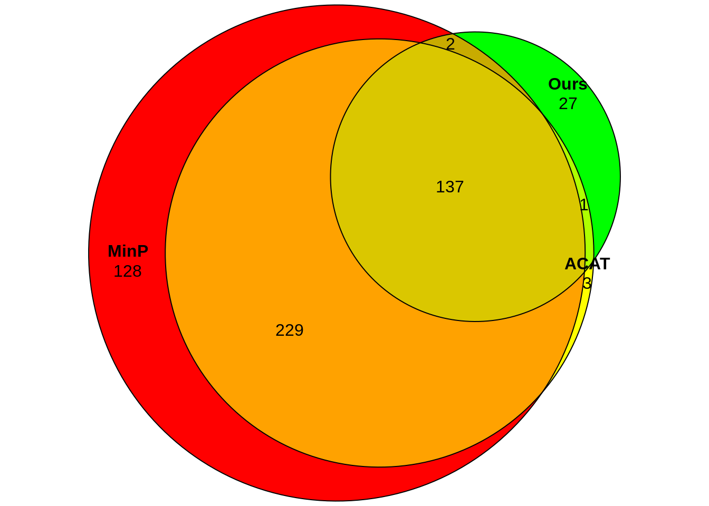
| Version | Author | Date |
|---|---|---|
| b7ce689 | jliucx | 2024-10-28 |
Test on gene p value
p_val_SNP <- read_csv("output/SNP62_SNP60_for_all_genes.csv")Warning: Missing column names filled in: 'X1' [1]
── Column specification ────────────────────────────────────────────────────────
cols(
.default = col_double(),
X1 = col_character()
)
ℹ Use `spec()` for the full column specifications.gene_names <- read.table("docs/row_names.txt", stringsAsFactors = FALSE)[,1]
colnames(p_val_SNP) <- c("grna",gene_names)p_val_SNP# A tibble: 2 × 2,107
grna ENSG00000187608 ENSG00000188157 ENSG00000176022 ENSG00000157933
<chr> <dbl> <dbl> <dbl> <dbl>
1 SNP-62_2 0.924 0.0557 0.997 0.277
2 SNP-60_1 0.334 0.786 0.949 0.783
# ℹ 2,102 more variables: ENSG00000157916 <dbl>, ENSG00000116213 <dbl>,
# ENSG00000116251 <dbl>, ENSG00000049245 <dbl>, ENSG00000074800 <dbl>,
# ENSG00000171608 <dbl>, ENSG00000054523 <dbl>, ENSG00000142657 <dbl>,
# ENSG00000160049 <dbl>, ENSG00000142655 <dbl>, ENSG00000120948 <dbl>,
# ENSG00000116649 <dbl>, ENSG00000171824 <dbl>, ENSG00000198793 <dbl>,
# ENSG00000116663 <dbl>, ENSG00000177000 <dbl>, ENSG00000083444 <dbl>,
# ENSG00000116688 <dbl>, ENSG00000120949 <dbl>, ENSG00000028137 <dbl>, …head(sceptre_result[sceptre_result$grna_id=="SNP-62_2",c(1,2,4)]) response_id grna_id p_value
1 ENSG00000130203 SNP-62_2 4.822269e-125
7 ENSG00000066583 SNP-62_2 6.534166e-60
9 ENSG00000197465 SNP-62_2 1.076675e-50
11 ENSG00000140332 SNP-62_2 2.359438e-46
12 ENSG00000107537 SNP-62_2 1.930300e-45
14 ENSG00000129084 SNP-62_2 1.167905e-42p_values <- as.numeric(p_val_SNP[1, -1]) # Exclude 'grna' column
response_ids_pval <- names(p_val_SNP)[-1] # The response IDs from p_val_SNP excluding 'grna'
# Filter based on p-values < 0.01
filtered_indices <- which(p_values < 0.01)
filtered_p_values <- p_values[filtered_indices]
filtered_response_ids <- response_ids_pval[filtered_indices]
# Filter `sceptre_result` to only include matching response_ids
matched_sceptre_result <- sceptre_result[sceptre_result$response_id %in% filtered_response_ids, ]
# Ensure ordering of `sceptre_result` matches `filtered_response_ids`
matched_sceptre_result <- matched_sceptre_result[match(filtered_response_ids, matched_sceptre_result$response_id), ]
# Extract p-values from `sceptre_result` and ensure they are in the same order
sceptre_p_values <- matched_sceptre_result$p_value
# Create a data frame for plotting
plot_data <- data.frame(
response_id = filtered_response_ids,
p_val_SNP = filtered_p_values,
sceptre_p_value = sceptre_p_values
)qqplot of gene p-values from our methods and sceptre
sorted_filtered_p_values <- sort(filtered_p_values)
sorted_sceptre_p_values <- sort(sceptre_p_values)
# Create a data frame for plotting
qq_data <- data.frame(
theoretical = sorted_filtered_p_values,
sample = sorted_sceptre_p_values
)
# Plot the QQ plot
ggplot(qq_data, aes(x = theoretical, y = sample)) +
geom_point() +
geom_abline(slope = 1, intercept = 0, color = "red", linetype = "dashed") +
labs(
x = " P-Value from our method",
y = " P-Value from sceptre",
title = "QQ Plot of P-Values from Our Method vs Sceptre"
) +
theme_minimal()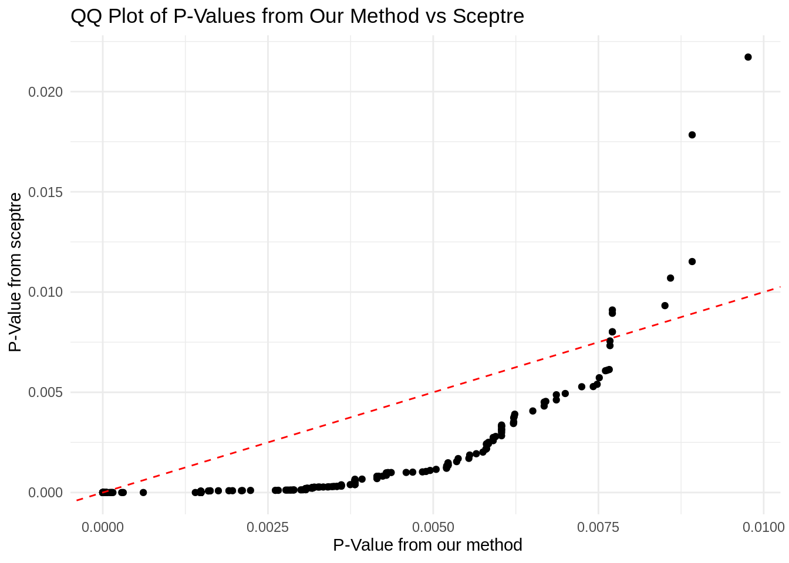
| Version | Author | Date |
|---|---|---|
| b7ce689 | jliucx | 2024-10-28 |
Scatter plot (problematic)
library(ggplot2)
ggplot(plot_data, aes(x = p_val_SNP, y =(sceptre_p_value))) +
geom_point() +
labs(x = "P-Value from our method (< 0.01)", y = "P-Value from sceptre", title = "Scatter Plot of Filtered P-Values") +
theme_minimal()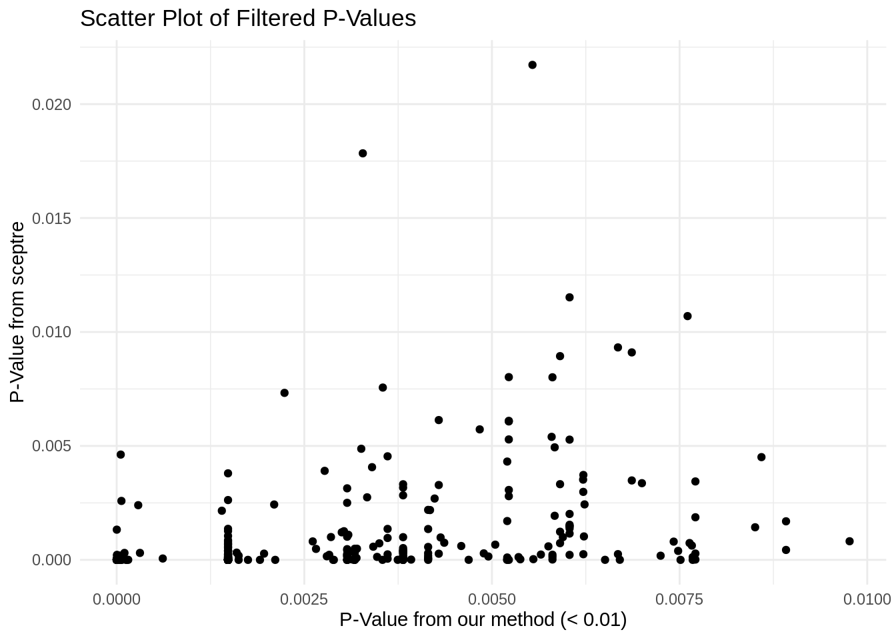
| Version | Author | Date |
|---|---|---|
| b7ce689 | jliucx | 2024-10-28 |
Histogram (problematic)
all_p_values <- as.numeric(p_val_SNP[1,-1])
# Filter p-values smaller than 0.01
filtered_p_values <- all_p_values[all_p_values < 0.01]
# Create a data frame for ggplot
p_values_df <- data.frame(p_value = filtered_p_values)
# Plot the histogram
ggplot(p_values_df, aes(x = p_value)) +
geom_histogram(bins = 2106, color = "black", fill = "blue") +
labs(
x = "P-Value",
y = "Frequency",
title = "Histogram of P-Values < 0.01"
) +
theme_minimal()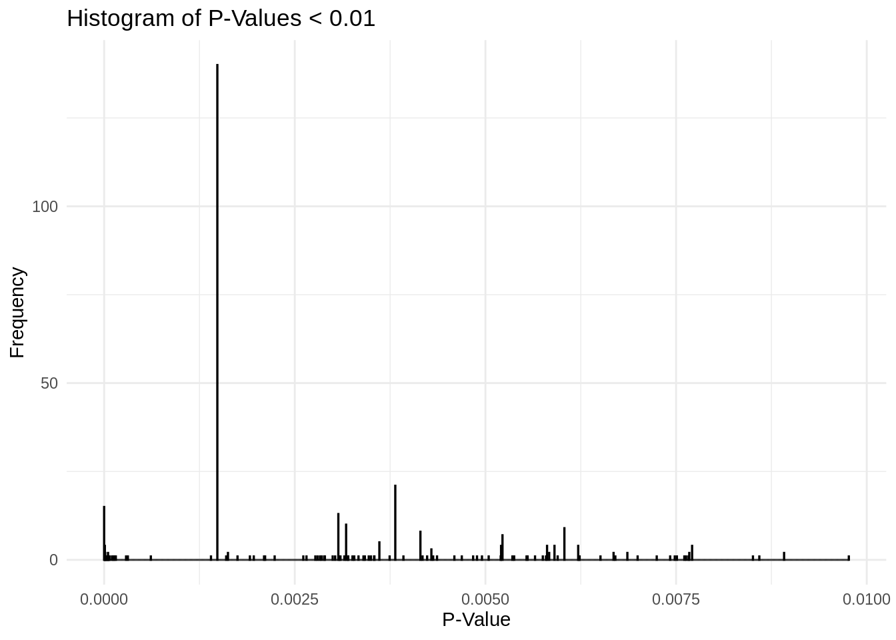
| Version | Author | Date |
|---|---|---|
| b7ce689 | jliucx | 2024-10-28 |
library(tidyr)
p_val_SNP_df <- as.data.frame(p_val_SNP[1, -1])
# Filter for p-values within the range and extract gene names (columns) and values
peak_pvals <- p_val_SNP_df %>%
select_if(~ . > 0.0014 & . <= 0.0015) %>%
gather(key = "gene_id", value = "p_value")
peak_pvals gene_id p_value
1 ENSG00000049245 0.001483524
2 ENSG00000054523 0.001483524
3 ENSG00000177000 0.001483524
4 ENSG00000120949 0.001483524
5 ENSG00000053372 0.001483524
6 ENSG00000011007 0.001483524
7 ENSG00000157978 0.001483524
8 ENSG00000116514 0.001483524
9 ENSG00000066136 0.001483524
10 ENSG00000126088 0.001483524
11 ENSG00000050628 0.001483524
12 ENSG00000265972 0.001483524
13 ENSG00000117362 0.001483524
14 ENSG00000143384 0.001483524
15 ENSG00000143409 0.001483524
16 ENSG00000160678 0.001483524
17 ENSG00000160789 0.001483524
18 ENSG00000152061 0.001483524
19 ENSG00000162909 0.001483524
20 ENSG00000163050 0.001483524
21 ENSG00000171848 0.001483524
22 ENSG00000115758 0.001483524
23 ENSG00000095002 0.001483524
24 ENSG00000115484 0.001483524
25 ENSG00000169564 0.001483524
26 ENSG00000116096 0.001483524
27 ENSG00000115459 0.001483524
28 ENSG00000042493 0.001483524
29 ENSG00000152253 0.001483524
30 ENSG00000128654 0.001483524
31 ENSG00000003436 0.001483524
32 ENSG00000173559 0.001483524
33 ENSG00000168497 0.001483524
34 ENSG00000127824 0.001483524
35 ENSG00000175084 0.001483524
36 ENSG00000163932 0.001483524
37 ENSG00000163882 0.001483524
38 ENSG00000073849 0.001483524
39 ENSG00000198836 0.001483524
40 ENSG00000164024 0.001483524
41 ENSG00000070190 0.001483524
42 ENSG00000138778 0.001483524
43 ENSG00000164109 0.001483524
44 ENSG00000081189 0.001483524
45 ENSG00000066583 0.001483524
46 ENSG00000145901 0.001483524
47 ENSG00000135074 0.001483524
48 ENSG00000134516 0.001483524
49 ENSG00000204681 0.001483524
50 ENSG00000204560 0.001483524
51 ENSG00000118515 0.001483524
52 ENSG00000078269 0.001483524
53 ENSG00000136213 0.001483524
54 ENSG00000122512 0.001483524
55 ENSG00000164654 0.001483524
56 ENSG00000122644 0.001483524
57 ENSG00000172115 0.001483524
58 ENSG00000065883 0.001483524
59 ENSG00000105953 0.001483524
60 ENSG00000136273 0.001483524
61 ENSG00000146733 0.001483524
62 ENSG00000146701 0.001483524
63 ENSG00000172354 0.001483524
64 ENSG00000128591 0.001483524
65 ENSG00000133606 0.001483524
66 ENSG00000106462 0.001483524
67 ENSG00000120896 0.001483524
68 ENSG00000165264 0.001483524
69 ENSG00000165092 0.001483524
70 ENSG00000170525 0.001483524
71 ENSG00000107537 0.001483524
72 ENSG00000119912 0.001483524
73 ENSG00000059573 0.001483524
74 ENSG00000176171 0.001483524
75 ENSG00000129084 0.001483524
76 ENSG00000110514 0.001483524
77 ENSG00000066336 0.001483524
78 ENSG00000162236 0.001483524
79 ENSG00000014138 0.001483524
80 ENSG00000073921 0.001483524
81 ENSG00000137713 0.001483524
82 ENSG00000150768 0.001483524
83 ENSG00000010292 0.001483524
84 ENSG00000111644 0.001483524
85 ENSG00000111674 0.001483524
86 ENSG00000111276 0.001483524
87 ENSG00000084453 0.001483524
88 ENSG00000139211 0.001483524
89 ENSG00000123374 0.001483524
90 ENSG00000076108 0.001483524
91 ENSG00000177889 0.001483524
92 ENSG00000120837 0.001483524
93 ENSG00000135148 0.001483524
94 ENSG00000089157 0.001483524
95 ENSG00000177192 0.001483524
96 ENSG00000100439 0.001483524
97 ENSG00000129473 0.001483524
98 ENSG00000197930 0.001483524
99 ENSG00000100722 0.001483524
100 ENSG00000092531 0.001483524
101 ENSG00000157456 0.001483524
102 ENSG00000140451 0.001483524
103 ENSG00000140332 0.001483524
104 ENSG00000178741 0.001483524
105 ENSG00000166411 0.001483524
106 ENSG00000103811 0.001483524
107 ENSG00000131876 0.001483524
108 ENSG00000005339 0.001483524
109 ENSG00000103496 0.001483524
110 ENSG00000166747 0.001483524
111 ENSG00000132510 0.001400938
112 ENSG00000161533 0.001483524
113 ENSG00000141556 0.001483524
114 ENSG00000134265 0.001483524
115 ENSG00000067900 0.001483524
116 ENSG00000175387 0.001483524
117 ENSG00000099804 0.001483524
118 ENSG00000099817 0.001483524
119 ENSG00000125733 0.001483524
120 ENSG00000072062 0.001483524
121 ENSG00000099331 0.001483524
122 ENSG00000105173 0.001483524
123 ENSG00000266964 0.001483524
124 ENSG00000130202 0.001483524
125 ENSG00000130204 0.001483524
126 ENSG00000130203 0.001483524
127 ENSG00000125753 0.001483524
128 ENSG00000105281 0.001483524
129 ENSG00000105486 0.001483524
130 ENSG00000104812 0.001483524
131 ENSG00000101361 0.001483524
132 ENSG00000124181 0.001483524
133 ENSG00000196839 0.001483524
134 ENSG00000180530 0.001483524
135 ENSG00000160200 0.001483524
136 ENSG00000093009 0.001483524
137 ENSG00000099957 0.001483524
138 ENSG00000198355 0.001483524
139 ENSG00000102172 0.001483524
140 ENSG00000089820 0.001483524
141 ENSG00000184216 0.001483524
sessionInfo()R version 4.1.0 (2021-05-18)
Platform: x86_64-pc-linux-gnu (64-bit)
Running under: CentOS Linux 8
Matrix products: default
BLAS/LAPACK: /software/openblas-0.2.19-el8-x86_64/lib/libopenblas_haswellp-r0.2.19.so
locale:
[1] LC_CTYPE=en_US.UTF-8 LC_NUMERIC=C LC_TIME=C
[4] LC_COLLATE=C LC_MONETARY=C LC_MESSAGES=C
[7] LC_PAPER=C LC_NAME=C LC_ADDRESS=C
[10] LC_TELEPHONE=C LC_MEASUREMENT=C LC_IDENTIFICATION=C
attached base packages:
[1] stats graphics grDevices utils datasets methods base
other attached packages:
[1] tidyr_1.3.0 eulerr_7.0.2 ACAT_0.91 readr_1.4.0
[5] dplyr_1.1.4 ggplot2_3.5.1 workflowr_1.7.1
loaded via a namespace (and not attached):
[1] tidyselect_1.2.0 xfun_0.45 bslib_0.7.0 purrr_1.0.2
[5] colorspace_2.1-0 vctrs_0.6.4 generics_0.1.3 htmltools_0.5.8.1
[9] yaml_2.2.1 utf8_1.2.1 rlang_1.1.2 jquerylib_0.1.4
[13] later_1.2.0 pillar_1.9.0 glue_1.6.2 withr_2.5.2
[17] lifecycle_1.0.4 stringr_1.5.1 munsell_0.5.0 gtable_0.3.0
[21] evaluate_0.23 labeling_0.4.3 knitr_1.48 callr_3.7.6
[25] fastmap_1.1.1 httpuv_1.6.1 ps_1.7.5 fansi_1.0.5
[29] highr_0.11 Rcpp_1.0.12 promises_1.2.0.1 scales_1.3.0
[33] cachem_1.0.8 jsonlite_1.8.7 farver_2.1.1 fs_1.6.3
[37] hms_1.1.0 digest_0.6.33 stringi_1.6.2 processx_3.8.4
[41] getPass_0.2-2 polyclip_1.10-6 rprojroot_2.0.4 grid_4.1.0
[45] cli_3.6.1 tools_4.1.0 magrittr_2.0.3 sass_0.4.9
[49] tibble_3.2.1 crayon_1.5.2 whisker_0.4.1 pkgconfig_2.0.3
[53] ellipsis_0.3.2 polylabelr_0.2.0 rmarkdown_2.27 httr_1.4.2
[57] rstudioapi_0.15.0 R6_2.5.1 git2r_0.32.0 compiler_4.1.0